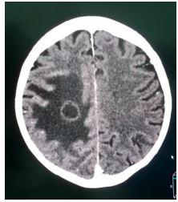
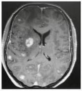
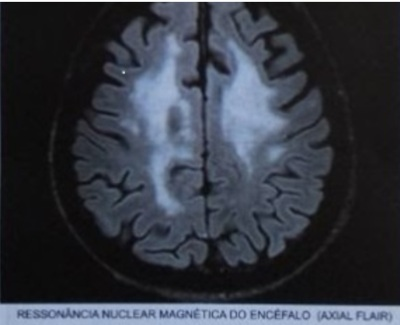

Questão 1 · Clínica Médica · Neurotoxoplasmose · Inf ecções oportunistas · 4000127338Homem de 44 anos é levado à Unidade de Pronto-Atendimento com história de duas semanas de febre, cefaleia intensa progressiva e episódios de desorientação. Há um dia, apresenta convulsões tônico-clônicas generalizadas. Ao exame: hipocorado 2+/4+, emagrecido; Glasgow 13, hemiparesia esquerda; ausência de sinais de irritação meníngea. Familiares relatam que fazia acompanhamento por infecção por HIV mas abandonou tratamento há 1 ano. Exames de um mês atrás: CD4 = 80 células/mm³ (VR = acima de 500 células/mm³), carga viral = 246.000 cópias/mL (VR = abaixo de 40 cópias/ml). TC de crânio com contraste teve o seguinte resultado (ver imagem). LEGENDA: VR: valor de referência. Com base na principal hipótese para o caso, qual o próximo passo do processo diagnóstico?

A Colher líquor para PCR.
B Iniciar prova terapêutica.
C Dosar IgM e IgG no sangue.
D Indicar biópsia estereotáxica.
Questão 2 · Transmissão vertical do HIV · 4000124796Sobre as crianças expostas ao HIV, é correto afirmar que:
A nos primeiros seis meses de vida, não devem receber as vacinas oferecidas pelo PNI, mas sim imunológicos especiais no Centro de Referência.
B o Ministério de Saúde do Brasil recomenda que a coleta da primeira carga viral seja feita na segunda semana de vida do recém- nascido.
C deve-se iniciar a profilaxia para pneumonia por Pneumocystis jiroveci com o uso desulfametoxazol + trimetoprim três vezes por semana se a contagem de linfócitos CD4 estiver abaixo de 15%.
D as não infectadas tendem a apresentar mais infecções bacterianas e quadros mais graves se comparadas a crianças não expostas ao HIV.
E para o diagnóstico de infecção pelo HIV, a recomendação é que o teste anti-HIV seja feito entre o 6º e o 12º mês de vida.
Questão 3 · HIVAids · Prof ilaxia préexposição PrEP · 4000123494Casal monogâmico, soro-diferente para infecção pelo HIV (ele é o positivo, realiza terapia antirretroviral com excelente adesão e sua carga viral está abaixo do limite de detecção há alguns anos), compareceu à consulta em busca de esclarecimentos sobre a possível transmissão sexual do vírus e sobre a possibilidade de não mais utilizar preservativos durante o ato sexual. Sobre esse quadro, assinale a assertiva correta.
A As relações sexuais devem continuar sendo realizadas com preservativo, por ainda haver a chance de transmissão do HIV.
B O uso de preservativo pode ser flexibilizado, para somente ser utilizado quando a mulher estiver menstruada.
C A transmissão sexual do HIV é improvável, e o casal não mais necessita manter relações sexuais com preservativo.
D A profilaxia pré-exposição com antirretrovirais contra o HIV é uma possibilidade e deve ser realizada sempre de forma contínua.
E A profilaxia após a exposição está indicada nessa situação.
Questão 4 · Outras normativas do SUS e da Saúde em geral · Epidemiologia · 4000120686Segundo o Protocolo Clínico e as Diretrizes Terapêuticas para o manejo da infecção pelo HIV em adultos, publicados em 2018 pelo Ministério da Saúde, o Brasil assumiu o compromisso dos Objetivos de Desenvolvimento do Milênio proposto junto à Organização das Nações Unidas (ONU), sendo uma das metas combater e reverter a tendência atual de propagação do HIV/Aids. O País também busca atingir a meta 90-90-90, que estabelece que, até 2020, 90% das pessoas com HIV sejam diagnosticadas (ampliando o diagnóstico do HIV); destas, que 90% estejam em TARV (ampliando o acesso à TARV); e que, dentre estas, 90% tenham a carga viral indetectável (indicando boa adesão ao tratamento e qualidade da assistência às PVHIV). Pensando em uma matriz de cuidado integral à pessoa vivendo com HIV/Aids, assinale a alternativa que apresenta a ação que deverá ser fortalecida para se chegar à meta proposta.
A reforçar as ações de prevenção ao sexo inseguro com campanhas e distribuição de preservativos
B aumentar os postos de distribuição de TARV em suas diversas modalidades (tratamento, PREP e PEP)
C desburocratizar o acesso ao teste rápido para o HIV, tornando o processo mais rápido
D ampliar a rede de testagem rápida do Sistema de Saúde, que hoje é exclusiva da atenção primária
E qualificar a rede de atenção básica para realizar tratamento e seguimento dos casos de PVHIV recém- diagnosticados
Questão 5 · HIVAids · 4000120609No cuidado das pessoas que vivem com HIV, a figura a seguir representa a mandala de

A intervenções comportamentais.
B estratégia de tratamento eficaz.
C prevenção combinada.
D estratégia de combinação de tratamento.
Questão 6 · Prof ilaxia préexposição PrEP · Prof ilaxia pósexposição PEP · 4000120495Sobre as medidas específicas a serem adotadas para profilaxia pré e pós-exposição ao HIV (PrEP e PEP) é correto afirmar:
A A PrEP consiste na utilização de dose alta e mensal de antirretroviral para grupos específicos não infectados que tenham maior risco de infecção pelo HIV, como homens que fazem sexo com homens.
B O esquema antirretroviral de PEP é recomendado por categoria de exposição: acidente com material biológico, violência sexual e exposição sexual consentida.
C A PrEP se insere como uma estratégia adicional, segura e eficaz de prevenção, mas ainda indisponível no Sistema Único de Saúde.
D PEP é uma estratégia de prevenção para evitar novas infecções pelo HIV, por meio do uso temporário de medicamentos antirretrovirais após uma exposição de risco à infecção pelo HIV.
E A PrEP é a terapia antirretroviral para evitar transmissão vertical do HIV, oferecida a todas as gestantes infectadas pelo HIV e suspensa após o parto.
Questão 7 · Agente etiológico · 4000120051Há um conjunto de estratégias de prevenção (biomédicas, comportamentais e estruturais) que, quando combinadas, constituem a chamada “prevenção combinada do HIV” ou “mandala de prevenção combinada”. A partir dessa informação, assinale a alternativa que apresenta uma estratégia de prevenção.
A prevenir a transmissão vertical do HIV
B imunizar para hepatite B e sífilis
C tratar as pessoas vivendo com HIV/Aids a partir do momento em que apresentarem contagem de linfócitos T CD4 < 350 células/mm³
D substituir a profilaxia pré-exposição (PrEP) pela profilaxia pós-exposição
E usar profilaxia pós-exposição (pós-p) em até cinco dias após a exposição sexual desprotegida
Questão 8 · Transmissão vertical do HIV · 4000119874Gestante de 23 anos, G1P0, com 35 semanas de gestação, apresenta infecção por HIV, em terapia antirretroviral correta. Carga viral indetectável realizada há 3 dias. A via de parto recomendada e a conduta, quanto à utilização de antirretroviral profilático no parto, são:
A parto cesário eletivo, a partir da 38ª semana; utilizar zido-vudina por via intravenosatrês horas antes do parto.
B parto segundo indicação obstétrica, podendo ser vaginal; utilizar zidovudina por viaintravenosa três horas antes do parto.
C parto cesário eletivo, a partir da 38ª semana; utilizar zido-vudina por via intravenosa nomomento do parto.
D parto segundo indicação obstétrica, podendo ser vaginal; manter terapia antirretroviralhabitual oral.
Questão 9 · Tuberculose · 4000118976Considere as afirmações referentes a coinfecção tuberculose /HIV: I - Pessoas que vivem com HIV têm maior risco de desenvolver a tuberculose, e muitas vezes, só têm o diagnóstico da infecção pelo HIV durante a investigação/confirmação da tuberculose, no entanto a tuberculose em pessoas que vivem com HIV não tem grande impacto na mortalidade por HIV. II - O teste para diagnóstico do HIV (rápido ou sorológico) deve ser ofertado a toda pessoa com diagnóstico de tuberculose. III - em toda visita aos serviços de saúde a pessoa que vive com HIV deve ser questionada quanto à presença de tosse e de febre, sudorese noturna ou emagrecimento, os quais associados ou não à tosse, podem indicar tuberculose. Está(ão) correta(s) a(s) afirmação(ões)?
A Apenas a II e III estão corretas.
B Apenas a I e II estão corretas.
C Apenas a I está correta.
D Todas estão corretas.
Questão 10 · Quadro clínico · Diagnóstico · 4000083535Homem, 25 anos, com histórico de drogadição e abandono de tratamento do HIV, procura emergência por cefaleia holocraniana e de forte intensidade há mais de 1 semana e febre. Exames laboratoriais evidenciam anemia e linfopenia, e a TC de crânio com contraste não apresenta lesões. A principal hipótese diagnóstica e a conduta indicada para confirmar o diagnóstico são:
A Encefalite herpética - eletroencefalograma.
B Meningite bacteriana - análise de líquor.
C Meningite criptocócica - análise de líquor.
D Neurotoxoplasmose - RNM de encéfalo.
Questão 11 · Quadro clínico · 4000076964Paciente feminina de 58 anos portadora de aids em tratamento irregular deu entrada em serviço de emergência com dor pleurítica, dispneia e febre baixa. A radiografia revelou pneumotórax à direta. A provável causa do quadro clínico é
A pneumonia por
B pneumonia por
C pneumonia por
D pneumonia por citomegalovírus.
E aspergilose pulmonar.
Questão 12 · Esquema básico inicial · Tratamento e prof ilaxia · Indicação · 4000076263Um paciente de 43 anos, sem morbidades prévias, é atendido com queixas de tosse e dispneia progressiva ao longo das últimas semanas. Há relato de emagrecimento, mal- estar e diarreia nos últimos oito meses. Ao exame, ele está levemente taquicárdico e taquipneico, com 89% de saturação à oximetria de pulso e estertores crepitantes esparsos à ausculta respiratória. A telerradiogra a de tórax revela in ltrados pulmonares esparsos bilaterais, a dosagem sérica de LDH está elevada (480UI/L) e a cultura de escarro é negativa para bactérias comuns. Testes imunoenzimático e molecular confirmam infecção pelo HIV, com carga viral superior a 10⁶ cópias/mL e contagem de CD4 de 77 células. É iniciado tratamento para pneumonia por Pneumocystis jiroveci com sulfametoxazol + trimetoprima (SMX-TMP). A melhor conduta, quanto ao início da terapia antirretroviral (TARV), é:
A completar 21 dias de tratamento com SMX-TMP, mantendo o fármaco em profilaxia secundária por três meses, apenas iniciando a TARV em nível ambulatorial, caso fique comprovada aderência ao tratamento
B iniciar esquema com tenofovir, entricitabina e dolutegravir durante a internação, com reavaliação ambulatorial de uma a duas semanas após a alta hospitalar visando a manter monitorização do tratamento
C iniciar TARV durante a internação, como estratégia rápida de resgate imune, reavaliando sua manutenção no seguimento ambulatorial, conforme a evolução da carga viral e contagem de CD4
D completar 21 dias de tratamento com SMX-TMP, mantido em seguida como profilaxia secundária, iniciando a TARV com tenofovir, lamivudina e efavirenz na primeira consulta ambulatorial
Questão 13 · Agente etiológico · História natural da doença · 4000068204Podemos afirmar que na Síndrome da Imunodeficiência Adquirida (SIDA):
A são doenças oportunistas definidoras: candidíase de esôfago e hanseníase.
B o agente etiológico é o HIV, que pertence à família dos retrovírus humanos e à subfamília dos lentivírus.
C atualmente há evidências de que o HIV seja transmitido por contato casual e até que o vírus seja propagado por insetos.
D nos pacientes não tratados ou nos quais o tratamento não conseguiu controlar de forma adequada a replicação viral, a contagem de células T CD4+ aumenta depois de um período variável abaixo de um limiar crítico.
E são doenças oportunistas definidoras: hanseníase e pneumonia.
Questão 14 · Prof ilaxia pósexposição PEP · 4000061396Enquanto aguardava a administração de vacina em uma Unidade Básica de Saúde (UBS), uma criança de 4 anos de idade coloca a mão dentro de recipiente para acondicionar objetos perfurocortantes e sofre acidente com agulha. Houve trans xação do dedo da criança e havia sangue visível na luz da agulha por ter sido usada recentemente (paciente fonte desconhecido). Criança foi atendida de imediato pelo pediatra de plantão na UBS. Em relação à pro laxia para a transmissão do vírus HIV neste caso, atribua V (verdadeiro) ou F (falso) às afirmativas a seguir. ( ) A terapia antirretroviral (TARV) indicada é a associação de zidovudina (AZT), lamivudina (3TC) e raltegravir (RAL). ( ) A TARV deve ser iniciada até 96 horas do acidente e deve ser mantida por 14 dias. ( ) É desnecessária a realização de testagem de HIV na criança no dia do acidente. ( ) A coleta seriada de sorologias para HIV na criança deve ser realizada posteriormente com 30 e com 90 dias do dia do acidente. ( ) Além da coleta seriadas das sorologias para HIV, outros objetivos do acompanhamento ambulatorial são avaliar a adesão e a toxicidade da TARV e fazer avaliação laboratorial. Assinale a alternativa que contém, de cima para baixo, a sequência correta.
A V, V, F, F, F.
B V, F, V, F, V.
C V, F, F, V, V.
D F, V, V, F, F.
E F, V, F, V, V.
Questão 15 · Epidemiologia · 4000054437A infecção pelo vírus HIV e a AIDS constituem um problema de saúde pública e seu per l epidemiológico sofreu mudanças ao longo do tempo. Sobre a epidemiologia da infecção pelo HIV e AIDS, assinale a alternativa correta:
A As maiores taxas de detecção de HIV em gestantes são nos estados da região nordeste.
B A razão entre os sexos expressa pela relação entre o número de casos de HIV/AIDS em homens e mulheres vem diminuindo nos últimos 10 anos.
C Embora a taxa de detecção de HIV/AIDS em mulheres na faixa etária de 20 a 25 anos tem decaído nos últimos 10 anos, entre os homens desta mesma faixa etária houve uma grande elevação.
D Com o aumento da oferta de tratamento antirretroviral precoce, houve redução da mortalidade em todas as regiões do Brasil nos últimos 10 anos, embora esta redução não se dado de maneira uniforme.
E A infecção pelo HIV/AIDS tem com principal via de transmissão a sexual, embora no início da epidemia tenha predominado em homens que fazem sexo com homens, nos últimos 10 anos, o número de casos novos nesta categoria tem decrescido.
Questão 16 · Prof ilaxia · 4000050915Sobre prevenção de novas infecções pelo HIV, assinale a alternativa correta.
A A carga viral-HIV materna suprimida (carga viral plasmática abaixo de 50 cópias/mL) no início da gestação (antes de 14 semanas) é o fator determinante na queda do risco de transmissão materno-fetal do HIV.
B No uso da PEP (prevenção pós-exposição), o primeiro atendimento deve ser considerado uma urgência e a terapia deve ser iniciada o mais breve possível, sendo 96 horas subsequentes à exposição o limite para o início do tratamento.
C O acesso à terapia antirretroviral é importante na redução da transmissão, mesmo havendo escassos relatos na literatura comprovando a transmissão do HIV por pessoa em supressão viral.
D Não existe correlação linear entre níveis de adesão e eficácia da prevenção pré- exposição (PrEP), conforme ensaios clínicos realizados envolvendo diferentes segmentos populacionais.
E A adesão subótima ao tratamento do paciente cronicamente infectado pode levar à presença de carga viral plasmática do HIV, o que não só prejudica o paciente, mas também aumenta o seu risco de transmissão sexual.
Questão 17 · Diagnóstico · 4000050896A respeito do diagnóstico laboratorial do HIV, considere as seguintes afirmativas: 1. A reatividade cruzada de anticorpos pode ser observada em algumas amostras em virtude de várias doenças autoimunes, podendo produzir resultados falso-reagentes nos ensaios imunológicos. 2. Após a transmissão do vírus, ocorre a fase de eclipse, que corresponde ao período de replicação local do patógeno e em que o RNA viral é detectável no plasma. 3. No paciente HIV+, a presença da IgM não permite diferenciar uma infecção recente de uma infecção crônica, tendo em vista que a IgM pode reaparecer em outros momentos durante o curso da infecção. 4. Os testes complementares convencionais, como western blot e imunoblot rápido, são menos sensíveis que os imunoensaios de 3ª e 4ª gerações, podendo produzir resultados falso não reagentes. Assinale a alternativa correta.
A As afirmativas 1, 2, 3 e 4 são verdadeiras.
B Somente as afirmativas 1, 3 e 4 são verdadeiras.
C Somente as afirmativas 2 e 4 são verdadeiras.
D Somente as afirmativas 2 e 3 são verdadeiras.
E Somente a afirmativa 1 é verdadeira.
Questão 18 · Transmissão vertical do HIV · 4000047413Recém-nascido termo nasceu de parto vaginal, com peso adequado para idade gestacional e sem intercorrências. Genitora não fez pré-natal, referindo que não sabia estar grávida. No momento do parto, foram realizados exames de rotina, tendo o teste rápido para sí lis sido não reagente, e o teste rápido para o HIV, reagente. Exame físico normal. NÃO faz parte da conduta inicial desse paciente:
A Banho em água corrente na sala de parto.
B Administração de zidovudina 4mg/kg/dose, via oral.
C Administração de nevirapina 1,2ml, via oral.
D Solicitar hemograma e dosagem de AST e ALT.
E Solicitar sorologia para HIV por método Elisa.
Questão 19 · Tratamento · 4000046023Homem de 26 anos, HIV positivo, iniciou tratamento com TARV há três meses. Nega outras comorbidades ou uso de outros medicamentos. Nega tabagismo. Retorna a consulta médica com exames laboratoriais evidenciando hipercolesterolemia. Em relação ao tratamento das dislipidemias nesse paciente, é correto afirmar:
A A escolha da estatina deve basear-se apenas na sua potência.
B O ezetimibe pode ser usado com segurança.
C O uso de estatinas é contraindicado.
D Tratamento com inibidores da PCSK9 é indicado.
Questão 20 · Testes rápidos · Diagnóstico · 4000046007Homem, 23 anos, homossexual, refere que, após relação sexual sem preservativo, o parceiro comunicou ser portador do vírus HIV e que não estava em uso correto das medicações. Após 4 semanas, o paciente realizou um teste rápido de uido oral em uma campanha da secretaria de saúde do município, resultando positivo. Ele foi encaminhado a um serviço de referência para esclarecimentos. Para confirmação diagnóstica de infecção pelo HIV, quais os próximos exames a serem solicitados?
A Pelo tempo de exposição, só é possível diagnóstico através de realização da carga viral do HIV ou de exames que contenham antígeno p24.
B São necessários mais dois testes rápidos, de marcas diferentes, e, se ambos positivos, a amostra é reagente para o HIV.
C No caso de um segundo teste inconclusivo, solicitar carga viral, se esta vier positiva, em qualquer valor, pode confirmar o diagnóstico.
D Apenas mais um teste rápido positivo (realizado com amostra de sangue já pode confirmar a infecção pelo HIV.
Questão 21 · Inf ecções do sistema nervoso central · 4000045979Pacientes com infecção pelo HIV em fase de doença não tratados, com imunossupressão relevante, apresentam frequentes casos de infecções oportunistas do Sistema Nervoso Central, com apresentação na forma de lesões focais expansivas ou não. Dentre as alternativas abaixo, assinale a opção que apresenta apenas doença não expansiva. I - Neurotoxoplasmose. II - Neurossífilis. III - Leucoencefalopatia Multifocal Progressiva. IV - Tuberculose do Sistema Nervoso Central. V - Neurocriptococose.
A I, II, IV.
B II, IV, V.
C II, III, V.
D II, IV, V.
E II, V.
Questão 22 · Tratamento · 4000039085A genotipagem pré-tratamento para manejo da infecção pelo HIV em adultos está indicada nas seguintes situações listadas abaixo, indique o item com erro:
A Pessoas que tenham se infectado com parceiro (atual ou pregresso em uso de TARV.
B Casais soro iguais.
C Gestantes infectadas pelo HIV.
D Coinfecção TB-HIV.
Questão 23 · Tratamento · 4000039078Raltegravir (RAL) deve ser administrado duas vezes ao dia, o que representa uma potencial desvantagem em relação a esquemas de tomada única diária. Podemos apenas concordar com o item:
A RAL apresenta péssima tolerabilidade, alta potência, poucas interações medicamentosas, eventos adversos pouco frequentes e segurança para o uso em coinfecções como hepatites e tuberculose.
B RAL apresenta excelente tolerabilidade, baixa potência, poucas interações medicamentosas, eventos adversos pouco frequentes e segurança para o uso em coinfecções como hepatites e tuberculose.
C RAL apresenta excelente tolerabilidade, alta potência, poucas interações medicamentosas, eventos adversos pouco frequentes e segurança para o uso em coinfecções como hepatites e tuberculose.
D RAL apresenta excelente tolerabilidade, alta potência, poucas interações medicamentosas, eventos adversos muito frequentes e segurança para o uso em coinfecções como hepatites e tuberculose.
Questão 24 · Transmissão vertical do HIV · 4000034046Paciente gestante de 35 anos, com 39 semanas, cesárea eletiva. Gestação sem intercorrências. Tem sorologia HIV positiva, com diagnóstico há 4 anos, em seguimento adequado. Carga viral negativa. Fez uso de AZT (zidovudina) oral a partir da 14ª quarta semana de gestação. O bebê nasce em boas condições, é colocado em berço aquecido, secado, aspirado suavemente as vias aéreas e levado ao banho com água e sabão. Qual é o principal efeito colateral do uso de AZT no recém-nascido?
A Hepatite medicamentosa.
B Hipotireoidismo.
C Leucemia.
D Anemia.
Questão 25 · Transmissão vertical do HIV · 4000034028Paciente gestante de 35 anos, com 39 semanas, cesárea eletiva. Gestação sem intercorrências. Tem sorologia HIV positiva, com diagnóstico há 4 anos, em seguimento adequado. Carga viral negativa. Fez uso de AZT (zidovudina) oral a partir da 14ª quarta semana de gestação. O bebê nasce em boas condições, é colocado em berço aquecido, secado, aspirado suavemente as vias aéreas e levado ao banho com água e sabão. Em relação ao recém-nascido, quais são as condutas e orientações a seguir mais adequadas?
A AZT endovenoso 1 dose de 2 mg/Kg no recém-nascido na sala de parto após 8 horas iniciar a medicação AZT de 6/6 horas por 6 semanas. Não amamentar ao seio materno. Colher sorologias toxoplasmose, rubéola, hepatite C e B, citomegalovírus, herpes simples, hemograma e provas de função hepática com 42 dias de vida.
B AZT endovenoso 1 dose de 2mg/Kg na sala de parto. Colher sorologia HIV, toxoplasmose, rubéola, hepatite C e B, citomegalovírus, herpes simples, hemograma de sangue periférico e aguardar resultados para conduta. Não amamentar ao seio materno e prescrever fórmula infantil.
C Não amamentar ao seio materno, prescrever fórmula infantil, prescrever AZT oral de 6 em 6 horas por 6 semanas, iniciar de preferência nas primeiras 2 horas de nascimento. Colher hemograma, provas de função hepática e sorologias toxoplasmose, rubéola, hepatite C e B, citomegalovírus, herpes simples e sífilis.
D Liberar seio materno na primeira hora de vida. Iniciar AZT oral após 48 horas de vida, devido carga viral materna negativa. Colher sorologias HIV, toxoplasmose, rubéola, hepatite C e B, citomegalovírus, herpes simples e hemograma de sangue periférico. Aguardar resultado para conduta.
Questão 26 · Transmissão vertical do HIV · 4000032473Qual a duração da profilaxia do AZT?
A 48 horas
B 96 horas
C 4 semanas
D 30 semanas
Questão 27 · Transmissão vertical do HIV · 4000030538Em relação aos cuidados imediatos com o recém-nascido (RN) exposto ao HIV, deve-se:
A realizar o parto empelicado, fazendo a retirada do neonato, mantendo-se asmembranas amnióticas íntegras.
B clampear o cordão umbilical após um minuto da extração do concepto, ou até que apulsação no cordão cesse, sem qualquer ordenha.
C evitar a realização do banho nas primeiras 24 horas subsequentes ao parto. Só limparo RN com compressas macias e úmidas.
D cancelar a aspiração das vias aéreas do RN, a fim de se evitar traumatismos emmucosas.
Questão 28 · Quadro clínico · Diagnóstico · Tratamento e prof ilaxia · 4000030418Paciente 32 anos, transplantado renal, em uso de terapia imunossupressora, iniciou há 15 dias com cefaleia holocraniana, pulsátil, turvação visual, náuseas e vômitos, nega febre. Ao exame clínico, apresentava confusão mental, edema de papila a fundoscopia, rigidez de nuca, paralisa de sexto nervo a esquerda. A ressonância magnética do crânio mostrou lesões pseudocísticas em núcleos da base. Análise do líquor: lâmina corada com tinta da China positiva. Quanto a neurocriptococose, assinale a alternativa INCORRETA:
A Punção lombar seriada está contraindicada devido a hipertensão intracraniana, devendo a conduta inicial ser a implantação de uma derivação ventricular externa.
B Apresenta-se mais comumente como meningoencefalite aguda ou subaguda.
C A hipertensão intracraniana ocorre em mais de 50% dos casos (raquimanometria >200 mmH₂O em decúbito lateral).
D Durante a fase de indução do tratamento está indicado uso de anfotericina B.
Questão 29 · Diagnóstico · Quadro clínico · 4000030010A leucoencefalopatia multifocal progressiva (LEMP), que ocorre em indivíduos com contagem de leucócitos T CD4+<200 células/mm³ e caracteriza-se por imagem de lesões múltiplas con uentes, hipodensas, que não captam contraste e não possuem efeito de massa, principalmente na substância branca, tem como causa:
A Vírus JC
B Citomegalovirus
C Toxoplasma gondii
D Criptococus spp
E Complexo Micobacterium avium
Questão 30 · Quadro clínico · 4000029956Homem de 27 anos com HIV positivo, chegou ao pronto socorro do hospital com quadro de vertigem, cefaleia, febre e crises convulsivas tônico clônica. Após medidas iniciais de suporte, foi realizado tomogra a de crânio com contraste que evidencia lesões hipodensas bilaterais em gânglios da base e junção corticomedular. A principal suspeita é:
A Neurocisticercose.
B Demência pelo vírus HIV.
C Meningoencefalite Criptocócica.
D Neurotoxoplasmose.
E Meningite viral.
Questão 31 · Inf ecções oportunistas · 4000027354Sobre infecções oportunistas no paciente adulto com AIDS (AcquiredImmunodeficiencySyndrome⁴), assinale a correta.
A A profilaxia secundária para pneumocistose com sulfametoxazol-trimetoprim pode ser descontinuada após aumento de linfócito T CD4 para acima de 200 células/mm³, por pelo menos três meses.
B Doença disseminada pelo complexo
C O uso de corticoides como terapia adjunta para pneumocistose está fortemente contraindicado pelo risco de disseminação da doença.
D A neurotoxoplasmose no paciente com AIDS é uma doença de reativação e, portanto, a presença de Imunoglobulina (IgM) sérica anti-toxoplasma é fundamental para seu diagnóstico.
Questão 32 · Diagnóstico · Tratamento · 4000022425O cuidado contínuo em HIV pode ser entendido como o processo de atenção aos usuários que vivem com HIV, que são entendidos como momentos, sendo que a dita Vinculação seria adequadamente determinada pela seguinte alternativa.
A Processo que consiste no acolhimento, orientação, direcionamento e encaminhamento de uma pessoa recém- diagnosticada com HIV ao serviço de saúde, para que ela realize as primeiras consultas e exames o mais brevemente possível, mas não desenvolva autonomia para o cuidado contínuo. O desfecho principal para considerar uma PVHIV vinculada é a realização da primeira consulta no serviço de atenção para o qual foi encaminhada e, de preferência, seu início de tratamento o mais rápido possível.
B Processo que consiste no acolhimento, orientação, direcionamento e encaminhamento de uma pessoa recém- diagnosticada com HIV ao serviço de saúde, para que ela realize as primeiras consultas e exames o mais brevemente possível e desenvolva autonomia para o cuidado contínuo. O desfecho principal para considerar uma PVHIV vinculada é a realização da primeira consulta no serviço de atenção para o qual foi encaminhada e, de preferência, seu início de tratamento o mais rápido possível.
C Processo que consiste no acolhimento, orientação, direcionamento e encaminhamento de uma pessoa recém- diagnosticada com HIV ao serviço de saúde, para que ela realize as primeiras consultas e exames o mais brevemente possível e desenvolva autonomia para o cuidado contínuo. O desfecho principal para considerar uma PVHIV vinculada é a realização da primeira consulta no serviço de atenção para o qual foi encaminhada e, de preferência, seu início de tratamento sendo desnecessário rapidez.
D Processo que consiste direcionamento apenas para encaminhamento de uma pessoa recém-diagnosticada com HIV ao serviço de saúde, para que ela realize as primeiras consultas e exames o mais brevemente possível e desenvolva autonomia para o cuidado contínuo. O desfecho principal para considerar uma PVHIV vinculada é a realização da primeira consulta no serviço de atenção para o qual foi encaminhada e, de preferência, seu início de tratamento o mais rápido possível.
Questão 33 · Diagnóstico · Quadro clínico · 4000020583Os principais achados pneumocistose ao exame físico incluem taquipneia, taquicardia e ausculta pulmonar normal ou com estertores nos ao nal da expiração. Sibilos, sinais de condensação pulmonar ou derrame pleural são raramente encontrados. Somente mostra erro o item:
A O achado radiográfico mais típico de PCP é o infiltrado intersticial periférico e assimétrico.
B Pneumatoceles e pneumotórax também podem ser observados.
C Rx de tórax pode ser normal em até um quarto dos casos de PCP.
D TC pode revelar atenuação pulmonar em vidro fosco.
Questão 34 · Tratamento e prof ilaxia · 4000020381Na pneumonia por Pneumocistose PCP moderada a grave (PaO2 <70MMHG) é recomendado esquemas administrados preferencialmente por via EV. Indique o item com erro:
A A mudança de via de administração de endovenosa para oral deve ser realizada quando ocorrer melhora clínica.
B Clindamicina 600mg EV a cada seis ou oito horas + primaquina 15-30mg VO uma vez ao dia é o principal esquema alternativo em caso de intolerância à sulfa.
C O esquema de escolha é a associação SMX-TMP (5mg/kg de TMP endovenosa a cada seis ou oito horas. O tempo total de tratamento é de 10 dias.
D A associação de corticosteroides ao tratamento de PCP moderada a grave apresentou redução importante na mortalidade.
Questão 35 · Lista Nacional de Notif icação Compulsória de doenças agravos e eventos de saúde pública · 4000014371NR32 Segurança e Saúde no Trabalho em Serviços de Saúde Durante o trabalho em um pronto-socorro, o médico residente perfurou seu dedo com uma seringa usada para punção venosa de um paciente. Diante desta situação, são medidas que devem ser tomadas: I - Notificação na ficha de investigação de acidente de trabalho específica para tal ocorrência. II - Verificação da situação vacinal do acidentado. III - Suporte emocional, devido ao estresse pós-acidente. IV - Se necessário, uso de quimioprofilaxia. Está(ão) CORRETA(S) a(s) medida(s) prevista(s) em:
A II e III apenas.
B I, II, III e IV.
C I, II e IV apenas.
D IV apenas.
Questão 36 · Esquema básico inicial · 4000003946Paciente masculino, de 36 anos de idade, que compareceu no SAE do município de residência, onde realizou os testes rápidos para Hepatite B, Hepatite C, HIV e Sí lis. O teste de triagem para HIV resultou reagente, imediatamente, foi realizado um segundo teste confirmatório (Biomanguinhos) que, também, resultou reagente. Ele encontra-se assintomático. Como parte da abordagem inicial foram indicados exames laboratoriais e outros, como a Contagem de linfócitos T CD4+ e a Carga viral, segundo Protocolo Clínico e Diretrizes Terapêuticas (PCDT) para o manejo da infecção pelo HIV, em adultos 2018, do Ministério da Saúde. A terapia antirretroviral lhe foi oferecida, no mesmo dia, do diagnóstico. Na semana seguinte, recebemos os resultados e a contagem de linfócitos T CD4+ foi de 682 células/mm³ e a carga viral foi de 2.524 cópias/mL. Assinale a alternativa CORRETA que apresente esquema antirretroviral inicial, indicado ao paciente.
A Combinação de três antirretrovirais, sendo dois inibidores de transcriptase reversa análogos de nucleotídeos/nucleosídeos, associados a um inibidor de transcriptase reversa não análogo de nucleotídeos/nucleosídeos. O esquema de primeira linha deve ser: comprimidos 2 em 1 de Tenofovir 300 mg + Lamivudina 300 mg, tomado 1 comprimido coformulado ao dia e associado a um comprimido de 200 mg de Nevirapina, de 12 em 12 horas, Via Oral.
B Combinação de três antirretrovirais, sendo dois inibidores de transcriptase reversa análogos de nucleotídeos/nucleosídeos, associados a um inibidor de protease. O esquema de primeira linha deve ser monoterapia de Tenofovir 1 comprimido de 300 mg/dia, Lamivudina 2 comprimidos de 150 mg/dia, Lopinavir/Ritonavir (200 mg/50 mg) 4 comprimidos por dia (2 comprimidos de 12 em 12 horas), via oral.
C Combinação de três antirretrovirais, sendo dois inibidores de transcriptase reversa análogos de nucleotídeos/nucleosídeos, associados a um inibidor de protease. O esquema de primeira linha deve ser monoterapia de Zidovudina 1 comprimido de 300 mg de 12 em 12 horas, Lamivudina 2 comprimidos de 150 mg/dia, Lopinavir/Ritonavir (200 mg/50 mg), 4 comprimidos por dia (2 comprimidos de 12 em 12 horas), via oral.
D Combinação de três antirretrovirais, sendo dois inibidores de transcriptase reversa análogos de nucleotídeos/nucleosídeos, associados a um inibidor de integrase. O esquema de primeira linha deve ser comprimido 2 em 1 de Tenofovir 300 mg + Lamivudina 300 mg (1 comprimido ao dia), via oral, associado a Dolutegravir 50 mg (1 comprimido ao dia), via oral.
E A combinação de três antirretrovirais, sendo dois inibidores de transcriptase reversa análogos de nucleotídeos/nucleosídeos associados a um inibidor de transcriptase reversa não análogo de nucleotídeos/nucleosídeos. O esquema de primeira linha deve ser: comprimidos 2 em 1 de Tenofovir 300 mg + Lamivudina 300 mg (1 comprimido da combinação ao dia), associado a um comprimido de Efavirenz 600 mg/dia.
Questão 37 · Tratamento e prof ilaxia · 4000001022Na pneumonia por Pneumocistose PCP moderada a grave (PaO2 <70MMHG) é recomendado esquemas administrados preferencialmente por via EV. Indique o item com erro:
A A mudança de via de administração de endovenosa para oral deve ser realizada quando ocorrer melhora clínica.
B Clindamicina 600mg EV a cada seis ou oito horas + primaquina 15-30mg VO uma vez ao dia é o principal esquema alternativo em caso de intolerância à sulfa.
C O esquema de escolha é a associação SMX-TMP (5mg/kg de TMP endovenosa a cada seis ou oito horas. O tempo total de tratamento é de 10 dias.
D A associação de corticosteroides ao tratamento de PCP moderada a grave apresentou redução importante na mortalidade.
Questão 38 · Diagnóstico · 4000000940A pesquisa direta do agente oportunista em amostras de escarro espontâneo ou induzido geralmente é pouco sensível para Pneumocistose PCP. Podemos apenas concordar que:
A O diagnóstico definitivo não é realizado pela identificação do agente por meio das colorações de azul de toluidina, Grocott, Giemsa ou técnica de imunofluorescência a partir de espécimes respiratórios.
B O diagnóstico definitivo é realizado pela identificação do agente por meio das colorações de azul de toluidina, Grocott, Giemsa ou técnica de imunofluorescência a partir de espécimes fora do sistema respiratório.
C O diagnóstico definitivo é realizado pela identificação do agente por meio das colorações de azul de toluidina, Grocott, Giemsa ou técnica de imunofluorescência a partir de espécimes respiratórios.
D O diagnóstico definitivo é realizado sem a identificação do agente por meio das colorações de azul de toluidina, a partir de espécimes respiratórios.
Questão 39 · Tenof ovir · Tratamento · Coinf ecção HIVHepatite B · 4000000496O início precoce da terapia está associado à redução da transmissibilidade e da morbimortalidade relacionadas à infecção pelo HIV. TARV para o HIV deve ser instituída prontamente. Podemos aceitar o item:
A O tenofovir e a lamivudina são fármacos antirretrovirais com atividade contra o HIV e contra o HBV, diminuindo o risco de progressão para cirrose e CHC.
B O tenofovir e a lamivudina são fármacos antirretrovirais com atividade contra o HIV e não contra o HBV, não diminuindo o risco de progressão para cirrose e CHC.
C O tenofovir e a lamivudina são fármacos antirretrovirais com atividade contra o HBV, diminuindo o risco de progressão para cirrose e CHC. Sem interação com o HIV.
D O tenofovir e a lamivudina são fármacos antirretrovirais sem atividade contra o HIV e contra o HBV, não diminuindo o risco de progressão para cirrose e CHC.
Questão 40 · Tratamento · 4000000466Um dos objetivos da abordagem inicial de uma pessoa com diagnóstico de infecção pelo HIV é estabelecer uma relação de confiança e respeito entre esta e a equipe multiprofissional do serviço de saúde. Nesse contexto, o item inadequado é:
A Avaliar falhas e não a adesão e seus motivos.
B Verificar possibilidade de resistência(s viral(is à TARV e necessidade de troca).
C Avaliar e investigar sintomas.
D Manejar comorbidades não controladas.
Questão 41 · Diagnóstico · 4000000443As estratégias para testagem têm o objetivo de melhorar a qualidade do diagnóstico da infecção pelo HIV e, ao mesmo tempo, assegurar que o diagnóstico seja realizado o mais precocemente possível, de forma segura e com rápida conclusão. Somente se mostra errado o item:
A Fazer revisão e documentação do primeiro exame anti-HIV.
B Checar se há contagens de LT-CD4+ e exames de CV-HIV anteriores.
C Discutir uso de ARV e se houve eventos adversos prévio.
D Vedado discutir o tempo provável de soro positividade.
Questão 42 · Prof ilaxia pósexposição PEP · 4000124601Médico plantonista de pronto-socorro acaba de perfurar o dedo indicador com agulha que utilizou para coleta de gasometria de paciente que apresenta insu ciência respiratória. Uma das hipóteses diagnósticas para o paciente é pneumonia grave por Pneumocistis carinnii. Além de solicitar teste de HIV para o paciente (resultado em torno de cinco dias), qual seria a melhor conduta para o médico que sofreu o acidente perfurante?
A Iniciar esquema antirretroviral com A ZT.
B Iniciar esquema antirretroviral com três drogas (A ZT + 3TC + indinavir).
C Aguardar sorologia para HIV do paciente antes de prescrever terapia antirretroviral.
D Desbridamento local e aplicação de antiviral tópico.
Questão 43 · Prof ilaxia pósexposição PEP · 4000113145O Protocolo Clínico e Diretrizes Terapêuticas do Ministério da Saúde (MS) recomenda que a pro laxia antirretroviral pós- exposição (PEP) de risco para infecção pelo vírus HIV seja iniciado o mais breve possível, tendo como limite
A 24 h
B 36 h
C 48 h
D 72 h
E 96 h
Questão 44 · Transmissão vertical do HIV · 4000092102Um lactente de um mês de idade é trazido à consulta de pediatria com história de exposição vertical ao HIV. A mãe utilizou tratamento antirretroviral durante toda a gestação, apresentando carga viral próxima ao parto de 2.000 cópias/ml. Ainda na maternidade a criança iniciou profilaxia da infecção pelo HIV. Quais exames confirmariam a infecção pelo HIV no lactente, segundo protocolo do Ministério da Saúde do Brasil?
A Dois testes de ELISA reagentes para o HIV. O primeiro, pelo menos duas semanas após a última dose da profilaxia com zidovudina e o segundo, imediatamente após o resultado do primeiro.
B Um teste de ELISA reagente para o HIV, mais um teste confirmatório que poderia ser Imunofluorescência Indireta ou Western-Blot, realizados em qualquer momento.
C Duas cargas virais acima de 5.000 cópias/ml. A primeira, pelo menos duas semanas após a última dose da profilaxia com zidovudina e a segunda, o mais breve possível após o resultado da primeira.
D Duas cargas virais acima de 10.000 cópias/ml. A primeira, pelo menos duas semanas após a última dose da profilaxia com zidovudina e a segunda, após o quarto mês de vida.
E Uma única carga viral acima de 5.000 cópias/ml realizada pelo menos duas semanas após a última dose da profilaxia com zidovudina já confirmaria o diagnóstico.
Questão 45 · Quadro clínico · Tratamento e prof ilaxia · 4000090993Assinale a alternativa correta em relação à toxoplasmose cerebral em pessoa vivendo com HIV (PVHIV).
A A toxoplasmose é a terceira causa mais comum de lesões expansivas em PVHIV.
B Ao longo do tratamento, a resposta radiológica costuma preceder a resposta clínica.
C acientes com esse diagnóstico geralmente apresentam contagem de linfócitos T CD4+ abaixo de 100 céls/mm³.
D A ressonância magnética de crânio é o exame diagnóstico de imagem de escolha na rede pública do SUS.
E O tratamento de escolha para pacientes não alérgicos ou intolerantes à sulfa é a associação de sulfadiazina, pirimetamina e ácido folínico por quatro semanas.
Questão 46 · Quadro clínico · Tratamento e prof ilaxia · Doença do Neurônio Motor · 4000090106Paciente convivendo com HIV, em tratamento irregular, admitido no PS com perda súbita de força muscular à esquerda. Ao exame físico: hemiparesia E e paralisia de hemiface esquerda, inferior à órbita. Realizada TC de crânio com contraste que evidenciou múltiplas lesões hipodensas, com edema perilesional e realce anelar pelo contraste. Assinale qual alternativa preenche o adequado Diagnóstico Sindrômico, a localização da lesão de SNC esperada na tomogra a e a conduta inicial para o caso:
A Síndrome do neurônio motor superior/paralisia de facial periférica - lesão acometendo gânglios da base à esquerda e pedúnculo cerebral – iniciar AAS 300mg e sinvastatina.
B Síndrome do neurônio motor superior/paralisia de facial central - lesão acometendo gânglios da base à direita e pedúnculo cerebral – iniciar Sulfadiazina, pirimetamina e ácido folínico.
C Síndrome do neurônio motor superior/paralisia de facial central - lesão acometendo gânglios da base à direita e pedúnculo cerebral – iniciar Ceftriaxone e dexametasona e coleta de líquor.
D Encefalite - lesão acometendo gânglios da base à direita e pedúnculo cerebral – indicado drenagem cirúrgica e iniciar Ceftriaxone e metronidazol.
Questão 47 · Prof ilaxias de doenças oportunistas · Indicação · 4000086226Menina com um mês e meio de idade, lha de mãe com HIV que não realizou pré-natal, tem resultado de exame de carga viral do HIV sérica igual a 5.500 cópias/ml (detecção do RNA viral através da reação em cadeia da polimerase). Aos quatro meses de idade, traz novo resultado, pela mesma técnica, com 550.000 cópias/ml e contagem de CD4 igual a 2.000 células/mm³, equivalendo a 35% do total de linfócitos. A criança está assintomática e em uso de sulfametoxazol-trimetoprim profilático. Qual é a conduta CORRETA para esse paciente?
A Suspender sulfametoxazol-trimetoprim e não indicar terapia antirretroviral, pois os resultados dos exames de carga viral refletem apenas a passagem transplacentária.
B Manter sulfametoxazol-trimetoprim profilático, mas não iniciar antirretrovirais, pois a criança está assintomática e o CD4 está normal para a faixa etária.
C Iniciar antirretrovirais independentemente de qualquer parâmetro clínico ou laboratorial, mas não manter sulfametoxazol-trimetoprim, pois o CD4 está normal para a faixa etária.
D Iniciar antirretrovirais e manter a profilaxia com sulfametoxazol-trimetoprim, independentemente de qualquer parâmetro clínico ou laboratorial.
Questão 48 · Neurotoxoplasmose · Uveíte por Toxoplasmose · 4000085728Considere as assertivas abaixo sobre manifestações clínicas da toxoplasmose. I- Coriorretinite pode ser identi cada no momento do diagnóstico da infecção por toxoplasmose ou como reativação de infecção latente meses ou anos após a mesma. II - Na toxoplasmose aguda em paciente imunocompetente, a persistência de linfadenopatia por mais de 1 mês é incomum; caso ocorra, devem ser pesquisadas outras etiologias. III - Em paciente imunocomprometido, o acometimento do sistema nervoso central manifesta-se como meningoencefalite, sendo raros achados neurológicos focais. Quais são corretas?
A Apenas I
B Apenas II
C Apenas III
D Apenas I e II
E I, II e III
Questão 49 · Inf ecção aguda pelo HIV · Fase de latência clínica · 4000080493O portador do vírus HIV pode transmiti-lo desde o momento de aquisição da infecção, entretanto, os indivíduos com infecção muito recente ou imunossupressão avançada têm maior concentração do HIV no sangue (carga viral) e nas secreções sexuais, transmitindo com maior facilidade o vírus. Qual alternativa relaciona corretamente a fase de infecção e os sintomas?
A A fase assintomática, pode durar de alguns meses a alguns anos, e os sintomas clínicos são mínimos ou inexistentes. Os exames sorológicos para o HIV são reagentes e a contagem de linfócitos T CD4+ estão em ascensão.
B Na fase assintomática, alguns pacientes podem apresentar uma linfoadenopatia generalizada persistente, “flutuante” e indolor.
C Na fase sintomática inicial, o portador da infecção pelo HIV pode apresentar sinais e sintomas inespecíficos de intensidade variável e não são ainda encontrados além de processos oportunistas como a candidíase oral.
D Na fase sintomática há uma redução da carga viral e a contagem de linfócitos.
Questão 50 · Tratamento e prof ilaxia · 4000080334O antibiótico de escolha no tratamento da pneumonia causada pelo pneumocystis carinii é:
A Rifampicina.
B Trimetropin/sulfametoxazol.
C Meropenem.
D Anfotericina B.
Questão 51 · Tuberculose · 4000079356Um jovem de 25 anos é atendido na Unidade Básica de Saúde com queixas de febre vespertina e tosse produtiva há 1 mês. Perdeu 8 Kg em três meses. Apresenta-se consciente e orientado ao exame, palidez cutâneo mucosa ++/4, sem adenomegalias. Cavidade oral com candidíase. Ausculta pulmonar com roncos em 1/3 médio à direita. FC = 90 bpm, PA = 120x80 mmHg. O médico solicita baciloscopia do escarro que é positiva e teste rápido para HIV que é reagente. O manejo correto desse paciente prevê:
A internação para investigar outras infecções oportunistas.
B início da TARV conforme resultados da contagem de CD4 e carga viral.
C prescrição do RHZE e início da TARV com Tenofovir/Lamivudina/Dolutegravir.
D orientação sobre a co-infecção HIV/ tuberculose e prescrição do RHZE.
Revisar: possível letra faltando em alt D
Questão 52 · Tuberculose · 4000071017Paciente HIV positivo com CD4 de 50 células/mm³ e carga viral de 50.000 cópias/mm³, procura a unidade básica de saúde com queixa de sudorese noturna, cansaço, febre e tosse há três semanas. Nesse caso, a conduta mais adequada é:
A iniciar azitromicina três vezes por semana como profilaxia
B associar tratamento com isoniazida por seis meses
C realizar exames para rastrear tuberculose
D trocar os medicamentos antirretrovirais
Questão 53 · Doenças def inidoras de AIDS · 4000068485Qual alternativa contém três doenças definidoras de Aids?
A Pneumocistose, candidíase oral, tuberculose pulmonar.
B Pneumonia pneumocócica, tuberculose atípica, sarcoma de Kaposi.
C Febre de origem obscura, candidíase oroesofageana, herpes-zóster.
D Sarcoma de Kaposi, carcinoma invasivo de colo uterino, pneumocistose.
Questão 54 · Prof ilaxia préexposição PrEP · 4000068269Um conjunto de ações e estratégias compõe a "Prevenção Combinada do HIV" proposta pelo Ministério da Saúde. Para as pessoas que vivem com HIV e AIDS, está indicada a expansão do acesso ao uso do Dolutegravir, e, como medida de redução do risco antes da exposição, o Protocolo Clínico e Diretrizes Terapêuticas para Pro laxia Pré- Exposição (PrEP) indica a seguinte associação de medicamentos antirretrovirais:
A Zidovudina associado ao Dolutegravir.
B Tenofovir associado à Entricitabina.
C Raltegravir associado ao Ritonavir.
D Lopinavir associado ao Ritonavir.
E Atazanavir associado à Zidovudina.
Questão 55 · Tratamento e prof ilaxia · 4000062240Uma paciente de 37 anos, branca, professora de ensino fundamental, foi atendida com queixas que se iniciam há cerca de 15 dias, caracterizadas por tosse seca e astenia. A partir de dois dias antes do atendimento apresentou também febre baixa e dispneia procurando então a emergência. Ao ser atendida não havia alterações da ausculta pulmonar e tampouco cianose. O único dado relevante era a presença de micropoliadenopatia cervical e inguinal bilaterais. Os exames complementares solicitados: A telerradiogra a do tórax mostrou in ltrado intersticial reticular bilateral. A gasometria arterial mostrou pH 7,4, PO2 72, PCO2 28, HCO3 20, BE +0,2. O teste rápido para o HIV foi positivo. Diante das informações acima o tratamento indicado para o caso se encontra na seguinte opção
A Sulfametoxazol + trimetropim + prednisona.
B Amoxacilina/clavulanato + eritromicina.
C Rifampicina + isoniazida + pirazinamida + etambutol.
D Hidrocortisona + claritromicina.
Questão 56 · Transmissão vertical do HIV · 4000060468Com a pro laxia antirretroviral, houve redução significativa das taxas de transmissão vertical do HIV. Em relação à conduta a ser tomada com o Recém-Nascido (RN), cuja mãe é infectada pelo HIV, segundo o último protocolo do Ministério da Saúde (2017), assinale a alternativa CORRETA.
A Se a gestante não tiver carga viral coletada no 3º trimestre, realizar 1ª dose de nevirapina nas primeiras 48 horas de vida e manter de 12 em 12 horas, por 30 dias.
B Se a gestante não tiver carga viral coletada, realizar 1ª dose de A ZT e nevirapina nas primeiras 8 horas de vida e mantê-los de 12 em 12 horas, por 30 dias.
C Para a gestante com carga viral indetectável no 3º trimestre, não é necessário realizar nevirapina para o RN, iniciar o AZT nas primeiras 8 horas de vida e manter de 6 em 6 horas, durante 6 semanas.
D Para a gestante com carga viral detectável no 3º trimestre, iniciar o AZT nas primeiras 8 horas de vida e sulfametoxazol-trimetoprima com 15 dias de vida para profilaxia de Pneumocystis jiroveci.
E Independentemente da carga viral materna, realizar o banho imediatamente após o nascimento, iniciar o AZT nas primeiras 4 horas de vida e manter de 12 em 12 horas, por 4 semanas.
Questão 57 · Prof ilaxia préexposição PrEP · 4000060013A pro laxia pré-exposição ao HIV (PrEP) e a Pro laxia Pós-exposição ao HIV (PEP) são estratégias de prevenção do HIV. A respeito do assunto, assinale a alternativa correta.
A A PrEP é altamente eficaz quando utilizada corretamente, porém correlação linear entre níveis de adesão e eficácia foi demonstrada em ensaios clínicos envolvendo somente alguns segmentos populacionais, como homens que fazem sexo com homens e mulheres trans.
B Pessoas em parceria sorodiscordante para o HIV não são consideradas prioritárias para uso da PrEP, pois as evidências científicas já indicam a baixa transmissibilidade de HIV por via sexual quando uma pessoa HIV positiva está sob Terapia Antirretroviral (TARV) há mais de seis meses, apresenta carga viral indetectável e não tem nenhuma outra IST.
C O simples pertencimento a um grupo de risco para HIV não é suficiente para caracterizar indivíduos com exposição frequente ao HIV. Para essa caracterização, é necessário observar as práticas sexuais, as parcerias sexuais e os contextos específicos associados a um maior risco de infecção.
D Para a indicação do uso de PrEP, ao contrário da PEP, deve-se excluir o diagnóstico prévio da infecção pelo HIV, uma vez que a introdução da PrEP em quem já está
E Pessoas com exposição de risco recente, sobretudo nos últimos 30 dias, devem ser orientadas quanto à possibilidade de infecção, mesmo com resultado não reagente nos testes realizados. Em tais situações pode-se indicar a PrEP até que seja confirmada a infecção pelo HIV.
Questão 58 · Transmissão vertical do HIV · 4000032513Recém-nascido com 15 dias de vida, nascido de parto cesariano, lho de mãe soropositiva para HIV em tratamento com antirretroviral, realizou atendimento com a pediatra por quadro de cólica. A médica pediatra identi cou que a criança estava com bom estado geral e em uso da zidovudina e de fórmula infantil. A pediatra decidiu entao solicitar um teste rápido Anti- HIV disponível na unidade para criança, cujo resultado foi positivo. Considerando o caso descrito acima, selecione a conduta CORRETA.
A Trata-se de um caso de infecção vertical para vírus HIV, sendo recomendado manter a zidovudina, associar lamivudina e nevirapina e colher a carga viral com genotipagem urgente por se tratar de uma recém-nascido.
B Trata-se de um caso de Síndrome de Imunodeficiência adquirida por HIV, sendo recomendado colher carga viral, CD4, CD8 e iniciar antirretroviral urgente por se tratar de uma recém-nascido.
C Trata-se de um caso de exposição vertical para vírus HIV, sendo recomendado manter a zidovudina por 4 semanas e, posteriormente, realizar dosagem de carga viral.
D Trata-se de um caso de infecção vertical para vírus HIV, sendo recomendado pelo Ministério da Saúde, especialmente no período neonatal, o uso do esquema profilático de pós-exposição (PEP) até no máximo 3 semanas de vida, iniciando esquema com tenofocvir, lamivudina e dolutegravir. Além de colher carga viral com genotipagem.
Questão 59 · Tratamento · 4000023394Determinada paciente de 16 anos de idade iniciou atendimento pré-natal em posto de saúde da família e foi diagnosticada com HIV nas sorologias de primeiro trimestre, iniciando terapia antirretroviral adequada e com boa adesão imediatamente. Os demais exames de rotina de pré-natal mostraram-se normais. Com base nesse caso clínico e nos conhecimentos médicos correlatos, julgue o item a seguir. Crianças com peso de nascimento inferior a 1.500 g não devem fazer uso do AZT.
A Certo.
B Errado.
Questão 60 · Transmissão vertical do HIV · 4000023390Determinada paciente de 16 anos de idade iniciou atendimento pré-natal em posto de saúde da família e foi diagnosticada com HIV nas sorologias de primeiro trimestre, iniciando terapia antirretroviral adequada e com boa adesão imediatamente. Os demais exames de rotina de pré-natal mostraram-se normais. Com base nesse caso clínico e nos conhecimentos médicos correlatos, julgue o item a seguir. Caso a gestante apresente carga viral indetectável após a 34ª semana, pode-se realizar o parto vaginal, não sendo necessária a administração materna de AZT injetável ou o uso de nevirapina na criança.
A Certo.
B Errado.
Questão 61 · Transmissão vertical do HIV · 4000023385Determinada paciente de 16 anos de idade iniciou atendimento pré-natal em posto de saúde da família e foi diagnosticada com HIV nas sorologias de primeiro trimestre, iniciando terapia antirretroviral adequada e com boa adesão imediatamente. Os demais exames de rotina de pré-natal mostraram-se normais. Com base nesse caso clínico e nos conhecimentos médicos correlatos, julgue o item a seguir. Caso a carga viral, após 34 semanas de gestação, seja superior a 1.000 cópias, a cesária eletiva com 38 semanas estará indicada, devendo ser acompanhada de infusão intravenosa de AZT na gestante, durante o parto, e do uso de AZT e nevirapina oral na criança.
A Certo.
B Errado.
Questão 62 · Quadro clínico · Tratamento e prof ilaxia · 4000019073Homem de 52 anos de idade, com diagnóstico de infecção por HIV e abandono de tratamento há 6 meses, apresenta quadro de cefaleia, febre baixa, confusão mental e hemiparesia esquerda com piora progressiva nas últimas duas semanas. Ao exame físico apresenta papiledema discreto bilateralmente à fundoscopia, diminuição de força muscular à esquerda. Assinale a alternativa correspondente ao tratamento da principal causa do distúrbio neurológico manifestado.
A Sulfadiazina + pirimetamina + ácido fólico.
B Sulfametoxazol + trimetoprima.
C Anfotericina B + flucitosina.
D Ganciclovir.
Questão 63 · Quadro clínico · Tratamento e prof ilaxia · Diagnóstico · 4000015989Homem de 23 anos, previamente hígido, apresentou uma crise convulsiva do tipo tônico-clônico generalizada. Negava crises convulsivas prévias, uso de drogas ou quaisquer comorbidades conhecidas. Relata emagrecimento de 10 kg nos últimos 6 meses, além de cefaleia bifrontal diária há 1 mês. Ao exame físico, estava hipocorado, anictérico, alerta e orientado. Havia pequenos e múltiplos linfonodos palpáveis nas regiões cervicais, occipitais e axilares. Os exames respiratório, cardiovascular, abdominal e neurológico não revelaram anormalidades. Os exames de laboratório revelaram: hemoglobina = 10 g/dl; leucócitos = 7.700/mm³; plaquetas: 110.000/mm³; anti-HIV = reagente; CD4 = 120/mm³; anti- Toxoplasma gondii: IgM = não reagente, IgG = reagente; anti-citomegalovírus: IgM não reagente, IgG: reagente. A Tomografia de Crânio (TC) com contraste revelou a seguinte imagem: Sobre o caso descrito, assinale a alternativa INCORRETA.

A As principais hipóteses diagnósticas são neurotoxoplasmose e citomegalovirose.
B O tratamento empírico com sulfadiazina + pirimetamina pode ser feito e a resposta clínica e radiológica avaliada em 10 a 14 dias.
C O diagnóstico etiológico definitivo é obtido pela realização da biópsia cerebral estereotáxica.
D Os glicocorticoides podem ser usados se houver rebaixamento da consciência e edema cerebral com efeito de massa à TC.
Questão 64 · Tratamento · 4000012600Na composição dos esquemas de resgate deve ser baseada na genotipagem e nos princípios gerais de Manejo da Infecção pelo HIV, podemos aceitar apenas o item:
A Falha prolongada, falhas múltiplas, resistência genotípica ampla (incluindo mutações no gene da protease), CV- HIV alta e contagens de LT-CD4+ baixas são fatores associados a menores taxas de resposta, mas não podem demandar esquemas ARV mais complexos.
B Falha prolongada, falhas múltiplas, resistência genotípica ampla (incluindo mutações no gene da protease), CV- HIV alta e contagens de LT-CD4+ baixas são fatores não associados a menores taxas de resposta, mas podem demandar esquemas ARV mais complexos.
C Falha prolongada, falhas múltiplas, resistência genotípica ampla (incluindo mutações no gene da protease), CV- HIV alta e contagens de LT-CD4+ baixas são fatores associados a menores taxas de resposta e podem demandar esquemas ARV mais complexos.
D Falha prolongada, falhas múltiplas, resistência genotípica ampla (incluindo mutações no gene da protease), CV- HIV alta e contagens de LT-CD4+ baixas são fatores associados a maiores taxas de resposta e podem demandar esquemas ARV mais complexos.
Questão 65 · Tratamento · 4000012592Analisando os princípios gerais da terapia de resgate no Manejo da Infecção pelo HIV, NÃO podemos aceitar apenas um dos seguintes itens. Assinale-o.
A A combinação criteriosa de medicamentos com alta barreira genética de classes distintas permite supressão viral máxima, mas transitória no contexto desafiador da multirresistência.
B Taxas de resposta superiores a 80% têm sido atingidas em estudos clínicos e na vida real.
C A composição e a complexidade do esquema de resgate necessárias a obtenção de supressão viral máxima dependem do tipo de falha (falha inicial vs. falhas múltiplas; resistência restrita vs. resistência ampla, incluindo a IP).
D A composição e a complexidade do esquema de resgate necessárias a obtenção de supressão viral máxima dependem dos níveis de CV-HIV e da contagem de LT-CD4+ no momento da falha.
Questão 66 · Tratamento · 4000012580Na prática clínica, observa-se que uma proporção de pacientes apresenta níveis detectáveis de CV-HIV após seis meses de TARV. Somente sendo INCORRETO que:
A A primeira suspeita diagnóstica deve ser de falha virológica e, se confirmada, um teste de genotipagem deve ser solicitado.
B Nos casos de falha virológica com carga viral abaixo de 500 cópias/ml podem representar um desafio no manejo do tratamento das PVHIVs.
C A detecção esporádica de viremia baixa (inferior a 200 cópias/ml) representa, na maior parte dos casos, replicação de vírus selvagens a partir de células latentes não infectadas.
D Uma medida isolada de CV-HIV detectável entre medidas indetectáveis, definida como blip viral, não configura falha virológica – blips, em geral, não estão associados à falha subsequente.
Questão 67 · Tratamento · 4000012566Uma vez detectada e confirmada a falha virológica, recomenda-se a pesquisa de resistência viral aos ARVs, cujo resultado auxilia na elaboração de um esquema de resgate com maior chance de supressão viral. Dessa forma, indica-se o exame de genotipagem para o HIV disponível. Entre suas principais vantagens, destacam-se diversos aspectos, indique o INADEQUADO.
A Possibilita a escolha de esquemas antirretrovirais com maior chance de supressão viral, com base na identificação de mutações de resistência.
B Não previne toxicidade de medicamentos inativos.
C Propicia o uso de medicamentos ativos por períodos mais prolongados.
D Previne trocas desnecessárias de ARV.
Questão 68 · Epidemiologia · 4000006308No Brasil, na última década (2006-2016), a taxa de detecção de Aids (por 100.000 habitantes):
A teve tendência ascendente em menores de cinco anos de idade.
B Aumentou em homens e diminuiu em mulheres na faixa etária de 20 a 24 anos de idade.
C Diminuiu em homens e aumentou em mulheres na faixa etária de 15 a 19 anos de idade.
D Manteve-se relativamente estável em ambos os sexos na faixa etária de 30 a 59 anos de idade.
E Diminuiu em ambos os sexos na faixa etária de 60 e mais anos de idade.
Questão 69 · Prof ilaxia pósexposição PEP · 4000005041O esquema de primeira escolha para pro laxia pós-exposição (PEP) ao HIV, segundo recomendação do Ministério da Saúde, atualizada em 27/09/2017 é:
A Efavirenz + lamivudina + tenofovir.
B lopinavir/ritonavir + lamivudina + zidovudina.
C Tenofovir + lamivudina + zidovudina.
D atazanavir/ritonavir + lamivudina + tenofovir.
E Dolutegravir + lamivudina + tenofovir.
Questão 70 · Esquema básico inicial · 4000003500Quanto ao tratamento antirretroviral, qual alternativa está de acordo com as atuais recomendações do Protocolo Clínico e Diretrizes Terapêuticas para Manejo da Infecção pelo HIV em Adultos - 2018:
A O esquema preferencial para início de tratamento antirretroviral em adultos se baseia em dose única diária de comprimido composto de tenofovir, lamivudina e efavirenz
B O esquema preferencial para início de tratamento antirretroviral em gestantes se baseia em dose única diária de comprimido composto de tenofovir e lamivudina associado a comprimido de dolutegravir
C O esquema preferencial para início de tratamento antirretroviral em adultos com co1infecção HIV e tuberculose não complicada é composto de dose única diária de comprimido de tonofovir, lamivudina e dolutegravir.
D O esquema preferencial para o início de tratamento antirretroviral em adultos se baseia em dose única diária de comprimido composto de tenofovir e lamivudina associada a comprimido de dolutegravir
E O início do tratamento antirretroviral em adultos com aids e internação hospitalar por doença grave deve ser adiado para evitar a síndrome inflamatória da resposta imune, devendo ser iniciado apenas após a alta hospitalar, em nível ambulatorial.
Questão 71 · Tratamento · 4000000860Uma mulher de 36 anos com síndrome da imunode ciência adquirida (AIDS) e uma contagem de CD4 de 35 / odinofagia e disfagia progressiva. A paciente relata febres diárias e uma perda de peso de 9 kg. A paciente foi tratado com clotrimazol sem alívio. No exame físico, a paciente é caquético com um índice de massa corporal (IMC) de 16 e um peso de 39 kg. A paciente tem uma temperatura de 38,2°. O exame da orofaringe não revela evidência de candidíase. A paciente é submetida a uma endoscopia digestive alta (EDA), que revela úlceras serpiginosas no esôfago distal sem vesículas. Nenhuma placa amarela é visualizada. São realizadas múltiplas biópsias que mostram inclusões intranucleares e intracitoplasmáticas em grandes células endoteliais e broblastos. Qual é o melhor tratamento para a esofagite deste paciente?
A Ganciclovir
B Corticóides
C Fluconazol
D Foscarnet
Questão 72 · Pneumonia bacteriana · 4000125360Homem, 28 anos, apresenta queixas de febre (38,9°C), tosse produtiva e dispneia de início há 3 dias. É soropositivo para HIV e há 45 dias a sua contagem de CD4 foi de 600 cels/microL. A radiogra a de tórax revela a presença de um in ltrado interstício-alveolar em região de lobo inferior direito. Qual o diagnóstico mais provável?
A Pneumonia por Pneumocystis jiroveci.
B Pneumonite aspirativa.
C Histoplasmose pulmonar.
D Pneumonia por citomegalovírus.
E Pneumonia bacteriana.
Questão 73 · História natural da doença · 4000120985Na evolução da infecção pelo HIV, é comum ocorrer envelhecimento precoce, que pode ser explicado pela associação de:
A Processo inflamatório crônico e ativação imune persistente.
B Controle completo da replicação viral após tratamento e uso tardio de antirretrovirais.
C Intensa inflamação do início da infecção e controle da ativação imune.
D Ativação imune persistente e uso precoce de antirretrovirais.
Questão 74 · Tratamento · 4000120622São considerados Anti-retrovirais Inibidores de Protease EXCETO:
A Indinavir (IDV).
B Nelfinavir (NFV).
C Ritonavir (RTV).
D Zidovudina (AZT).
Questão 75 · Inf ecções oportunistas · Tratamento · Síf ilis · 4000120573Paciente andarilho descobriu ser portador do HIV há 9 anos, quando apresentou fraqueza, perda de peso (cerca de 10 kg), seguida de astenia e adinamia com lesões cutâneas descamativas. Nessa época foi indicado o uso dos antirretrovirais Tenofovir, Lamivudina e Lopinavir/ritonavir. No entanto, interrompeu o tratamento por apresentar diarreia após o uso de Lopinavir/ritonavir. Tinha antecedentes de uso de drogas endovenosas, tabagismo e tosse persistente. Retorna ao serviço médico, bastante emagrecido, apresentando contagem de linfócitos CD4 de 80 cels./mm³, carga viral de 47.300 cópias/mL (log = 4,77), VDRL sérico de 1:64, com FTA-Abs reagente e Rx de tórax com imagem sugestiva de sequela de tuberculose, sem nunca ter realizado tratamento. A conduta mais adequada para o paciente seria
A retornar ao uso de antirretrovirais em esquema com menor número de comprimidos, tratar sífilis secundária, prescrever tratamento para tuberculose latente e profilaxia para infecção por P. jirovecci e toxoplasmose.
B solicitar genotipagem para definir o nova associação de antirretrovirais, pois o paciente apresentou falha no tratamento, tratar a sífilis latente, orientar vacinação e profilaxia para doenças oportunistas.
C retornar ao uso de antirretrovirais num esquema que permita maior adesão; tratar sífilis secundária, investigar tuberculose doença e proceder à profilaxia para doenças oportunistas.
D retornar ao mesmo esquema de antirretrovirais prévio, solicitar prova tuberculínica (PPD); tratar sífilis secundária, indicar vacinação e profilaxia para doenças oportunistas.
E indicar novo esquema de antirretrovirais que facilite a adesão, tratar sífilis e tuberculose latente; orientar atualização vacinal e prescrever profilaxia para P .jirovecci e T. gondii.
Questão 76 · Agente etiológico · Diagnóstico · Transmissão vertical do HIV · 4000117704Em relação ao tratamento de infecção por HIV, é CORRETO afirmar que:
A A terapia antirretroviral está indicada para todas as gestantes infectadas pelo HIV, independentemente dos critérios imunológicos, e deve ser suspensa após o parto.
B A genotipagem pré-tratamento está indicada para todas as gestantes infectadas pelo HIV.
C Atualmente o Ministério da Saúde orienta o uso de lamivudina, tenofovir e efavirenz como terapia inicial preferencial para os pacientes infectados pelo HIV.
D A terapia antirretroviral está indicada quando a contagem de linfócitos T CD4+ for inferior a 500 células/mm³.
E A terapia antirretroviral deve ser prescrita após o segundo mês de tratamento da tuberculose nos pacientes coinfectados (HIV e tuberculose pulmonar) com imunossupressão avançada (linfócitos T CD4 < 50 células/mm³).
Questão 77 · Tratamento e prof ilaxia · 4000110999Qual droga abaixo pode ser usada em substituição a Sulfadiazina no tratamento da neurotoxoplasmose:
A Pirimetamina.
B Clindamicina.
C Oxacilina.
D Ceftriaxone.
E Anfotericina B.
Questão 78 · Quadro clínico · Formas clínicas · 4000107073A síndrome da imunode ciência adquirida (AIDS) é uma condição desencadeada, pelo vírus da imunode ciência humana (HIV), caracterizada pela ocorrência de importante imunodepressão. Neste contexto, a infecção fúngica invasiva (com risco de óbito) que mais comumente ocorre nesta condição é:
A Aspergilose;
B Coccidioidomicose;
C Penicilinose;
D Criptococose disseminada;
E Paracococcidioidomicose.
Questão 79 · Quadro clínico · 4000107038Enferma, 28 anos, com diagnóstico de síndrome de imunode ciência adquirida, apresenta diminuição do nível de consciência e hemiplegia direita. A principal hipótese diagnóstica é:
A Leucoencefalopatia multifocal progressiva;
B Toxoplasmose cerebral;
C Linfoma;
D Co-infecção Trypanosoma cruzi/vírus da imunodeficiência adquirida (HIV);
E Criptococose.
Questão 80 · Doenças def inidoras de AIDS · 4000106998Um paciente infectado pelo vírus HIV preenche a definição para AIDS (categoria clínica C do sistema de classificação proposto pelo CDC norte-americano, 1992) caso apresente as seguintes doenças associadas:
A Herpes-zóster, criptosporidíase aguda, retinite por citomegalovírus;
B Candidíase orofaríngea, sarcoma de Kaposi, infecção por micobactérias não tuberculosis;
C Isosporíase crônica, câncer cervical invasivo, histoplasmose extrapulmonar;
D Candidíase vaginal persistente, púrpura trombocitopênica idiopática, neurocriptococose;
E Nenhuma das alternativas.
Questão 81 · História natural da doença · 4000106995A associação de tosse crônica, hipoxemia e baqueteamento digital numa criança infectada pelo HIV são indicativos de:
A Miocardite pelo HIV
B Pneumonia por Pneumocystis jiroveci
C Tuberculose pulmonar
D Pneumonia intersticial linfocítica
E Pneumonia por Histoplasma capsulatum
Questão 82 · Leucoencef alopatia multif ocal progressiva LEMP · 4000105951Mulher, 74 anos, teve queda da própria altura há 2 meses. Após este episódio, evoluiu com fraqueza muscular, disfagia, di culdade para deambular e de fala progressivas. Nega outras queixas. Exame físico: REG. FC = 91 bpm; PA = 126 x 68 mmHg. Glasgow = 12 (AO4 / RV2 / RM 6). Pupilas isofotorreagentes, lúcida e desorientada no tempo e espaço. Flacidez dos quatro membros, sem fasciculações ou mioclonias. Re exo de Babinski à esquerda. Exame do líquido cefalorraquidiano (nível lombar): células = 11/mm³ (100% de linfócitos); proteínas = 55 mg/dl; glicose = 75 mg/dl, tinta da china: negativo, glicemia capilar = 134 mg/dl; sorologia para HIV; positiva. Quanti cação de linfócitos CD4+ = 92 células/mm³, quanti cação da carga viral do HIV = 12.366 cópias/ml. Realizou ressonância nuclear magnética de encéfalo (figura abaixo). Qual é o diagnóstico mais provável?

A Hemorragia intraparenquimatosa.
B Encefalite pelo vírus herpes simples 1.
C Leucoencefalopatia multifocal progressiva.
D Distúrbio neurocognitivo associado ao HIV 1.
Questão 83 · Prof ilaxia pósexposição PEP · 4000104310Um dos pontos mais importantes no sucesso da pro laxia da transmissão de doenças virais em mulheres vítimas de violência sexual é o tempo decorrido da agressão e o início da terapia. Para a pro laxia contra HIV, a terapia antirretroviral deve ser administrada impreterivelmente até:
A 5 dias
B 14 dias
C 24 horas
D 72 horas
Questão 84 · Indicação · 4000103592Uma paciente de 20 anos, pertencente a grupo de risco (múltiplos parceiros sexuais sem uso de preservativo), procura o médico com exame de sorologia para o HIV positivo (anti-HIV ELISA) repetido e confirmado com Western blot. O médico pede exame de carga viral, imunotipagem linfocitária e genotipagem para o HIV. Em relação ao tratamento nos dias atuais, deve-se recomendar que a paciente inicie o tratamento em caso de:
A CD4 menor que 350 células.
B CD4 menor que 250 células.
C Presença de doença definidora.
D Qualquer contagem de CD4.
Questão 85 · Tratamento · 4000101947Adesão ao tratamento consiste na utilização ideal dos medicamentos antirretroviral ARV, sendo NÃO compatível com o mesmo, apenas, o item abaixo indicado:
A adesão ao tratamento consiste na utilização ideal dos medicamentos antirretroviral ARV da forma mais próxima possível àquela prescrita pela equipe de saúde, respeitando as doses, horários e outras indicações.
B a adesão também é um processo colaborativo que facilita a aceitação e a integração de determinado esquema terapêutico no cotidiano das pessoas em tratamento.
C considera-se como adesão suficiente a tomada de medicamentos com uma frequência de, pelo menos, 95 % para alcançar a supressão viral e sua manutenção.
D ressalta-se que a má adesão é uma das principais causas de falha terapêutica.
Questão 86 · Tratamento · 4000101926Existem momentos que são representados como uma sequência de degraus na chamada “Cascata de cuidado contínuo do HIV”, e têm sido usados globalmente para estabelecer metas e monitorar os avanços relativos ao cuidado das PVHIV. No que diz respeito ao cuidado clínico e à atuação nos serviços brasileiros, de nem-se os momentos de “vinculação ”, da seguinte forma:
A Vinculação: é o processo que consiste no acolhimento, orientação, direcionamento e jamais encaminhar a pessoa recém-diagnosticada com HIV ao outro serviço de saúde, para que ela realize as primeiras consultas e exames o mais brevemente possível e desenvolva autonomia para o cuidado contínuo. O desfecho principal para considerar uma PVHIV vinculada é a realização da 1ª consulta no serviço de atenção para o qual foi encaminhada e, de preferência, seu início de tratamento o mais rápido possível.
B Vinculação: é o processo que consiste no acolhimento, orientação, direcionamento e encaminhamento de uma pessoa recém-diagnosticada com HIV ao serviço de saúde, para que ela realize as primeiras consultas e exames o mais brevemente possível e desenvolva autonomia para o cuidado contínuo. O desfecho principal para considerar uma PVHIV vinculada é a realização da 1ª consulta no serviço de atenção para o qual foi encaminhada e, de preferência, seu início de tratamento o mais rápido possível.
C Vinculação: é o processo que consiste no acolhimento, orientação, direcionamento e encaminhamento de uma pessoa recém-diagnosticada com HIV ao serviço de saúde, para que ela realize as primeiras consultas e exames o mais brevemente possível e desenvolva autonomia para o cuidado contínuo. O desfecho principal para considerar uma PVHIV vinculada é a realização da 3ª consulta no serviço de atenção para o qual foi encaminhada e, de preferência, seu início de tratamento o mais rápido possível.
D Vinculação: é o processo que consiste no acolhimento, mesmo sem orientação ou direcionamento de uma pessoa recém-diagnosticada com HIV ao serviço de saúde, para que ela realize as primeiras consultas e exames o mais brevemente possível e desenvolva autonomia para o cuidado contínuo. O desfecho principal para considerar uma PVHIV vinculada é a realização da 1ª consulta no serviço de atenção para o qual foi encaminhada e, de preferência, seu início de tratamento o mais rápido possível.
Questão 87 · HIVAIDS · Tuberculose · 4000101493A tuberculose (TB) ativa em pessoas que vivem com HIV/AIDS (PVHA) é a condição de maior impacto na mortalidade por AIDS e por TB no país. NÃO, sendo adequado que:
A A TARV deve ser iniciada entre a 2a e a 8a semana após o início do tratamento paraTB.
B Para ter impacto na mortalidade, pacientes com LT-CD4+ inferior a 200 cel/mm3, devem começar a TARV na 2a semana após o início do tratamento para tuberculose.
C Para ter impacto na mortalidade, pacientes com sinais de munodeficiência avançada, devem começar a TARV na 5a semana após o início do tratamento para tuberculose.
D Nos demais pacientes, que não estão com LT-CD4+ inferior a 200 cel/mm3 ou com sinais de imunodeficiência avançada, a TARV pode ser iniciada na 8a semana, após o término da fase intensiva do tratamento da TB.
Questão 88 · Diagnóstico · Tratamento · 4000098823Homem, 45a, vem ao ambulatório de infectologia assintomático, trazendo duas sorologias (sendo um deles imunoenzimático de 4ª geração e o outro de imunoblot) positivas para o vírus da imunode ciência humana (HIV). A conduta é:
A Realizar sorologias confirmatórias (teste molecular seguido de western-blot) e considerar tratamento após confirmação do diagnóstico de infecção pelo HIV.
B Iniciar imediatamente terapia antirretroviral, com associação de tenofovir, lamivudina e dolutegravir, independente da carga viral e da contagem de linfócitos-T CD4+ em sangue periférico.
C Coletar Carga Viral (CV) e contagem de linfócitos-T CD4+ em sangue periférico e indicar terapia antirretroviral caso CV > 2 log ou contagem de linfócitos-T CD4+ < 500 mm³.
D Coletar Carga Viral (CV) e contagem de linfócitos-T CD4+ em sangue periférico e indicar terapia antirretroviral caso CV > 3 log ou contagem de linfócitos-T CD4+ < 200 mm³.
Questão 89 · Transmissão vertical do HIV · Cirurgia · 4000095822Você recepciona um recém-nascido pré-termo e verifica que a mãe tem teste rápido de HIV positivo. Sobre isso, assinale a alternativa CORRETA:
A A administração da Nevirapina deverá ser realizada no dia do nascimento, com 48 horas após a primeira dose e com 96 horas após a segunda dose.
B O maior risco de transmissão da infecção congênita por HIV na gravidez ocorre no primeiro trimestre.
C O recém-nascido deve receber A ZT até 72 horas após o nascimento, pois depois disso não há evidências da eficácia da quimioprofilaxia.
D O aleitamento materno deve ser mantido até o resultado do exame de W estern- Blot da mãe.
Questão 90 · Inf ecções oportunistas · 4000088957Um homem de 46 anos, com HIV, apresenta a primeira crise epiléptica da vida. O exame de ressonância magnética de encéfalo, solicitado para investigação da causa, mostrou uma lesão de 3 cm na região temporo-parietal esquerda, com realce pelo gadolínio. A neoplasia, rara na população geral, constitui lesão encefálica comum em pacientes com AIDS e é denominada:
A Sarcoma de Kaposi.
B Linfossarcoma.
C Linfoma metastático.
D Linfoma primário.
Questão 91 · Tratamento · 4000085656Qual dos medicamentos abaixo NÃO é uma opção inicial no tratamento de pessoas com diagnóstico de HIV?
A Tenofovir.
B Nevirapina.
C Estavudina.
D Lamivudina.
E Dolutegravir.
Questão 92 · Esquema básico inicial · 4000083463A recomendação de iniciar terapia antirretroviral para todos os pacientes vivendo com HIV está baseada na alternativa:
A Diminuição da morbimortalidade, independentemente da contagem de linfócitos CD4/CD8.
B Diminuição no risco de infecções oportunistas para os pacientes vivendo com HIV.
C Diminuição no risco de transmissão de HIV de paciente para paciente.
D Diminuição no custo com hospitalizações e outras complicações associadas com a síndrome da imunodeficiência adquirida.
E Benefícios associados ao início precoce do tratamento para HIV e aumento na sobrevida desse pacientes.
Questão 93 · Parto · Tratamento · 4000081842Como recomendação de manejo da gestante infectada pelo vírus da imunode ciência humana (HIV), deve-se prescrever a terapia antirretroviral assim que possível. Após o parto, qual é a orientação em relação ao tratamento antirretroviral da gestante?
A Manter por trinta dias.
B Manter por sessenta dias.
C Manter por noventa dias.
D Interromper o uso.
E Continuar o tratamento.
Questão 94 · Pneumocistose · 4000081796O Ministério da Saúde (2010) é enfático ao a rmar que a síndrome da imunode ciência adquirida é uma doença que representa um dos maiores problemas de saúde da atualidade, em função do seu caráter pandêmico e de sua gravidade. Desta forma, os indivíduos infectados evoluem para uma grave disfunção do sistema imunológico, o que favorece o surgimento de doenças oportunistas causadas por fungos, tais como:
A pneumocistose
B micobacterioses
C leucoencefalopatia multifocal progressiva
D criptosporidiose
Questão 95 · Esquema básico inicial · 4000078243De acordo com o Protocolo Clínico e Diretrizes Terapêuticas para Manejo da Infecção pelo HIV em Adultos (atualizado em: 27/09/2017), preconiza-se o início imediato de antirretrovirais para pacientes diagnosticados com HIV. O esquema inicial deve ser:
A Lamivudina, Zidovudina e Efavirenz.
B Lamivudina, Tenofovir e Dolutegravir.
C Lamivudina, Tenofovir e Abacavir.
D Lamivudina, Tenofovir e Atazanavir/r.
E Lamivudina, Tenofovir e Darunavir/r.
Questão 96 · Prof ilaxia pósexposição PEP · 4000078208Sobre a pro laxia pós-exposição (PEP) de risco para infecção pelo HIV, sabemos que deve ser iniciada o mais precocemente possível. Entretanto, deve-se respeitar o limite de:
A 72h.
B 7 dias.
C 24h.
D 48h
E 96h.
Questão 97 · Transmissão vertical do HIV · 4000077580De acordo com o protocolo clínico e diretrizes terapêuticas para manejo da infecção pelo HIV, em crianças e adolescentes, do Ministério da Saúde (2017), é CORRETO afirmar que:
A Todos os recém-nascidos de mães infectadas pelo HIV devem receber AZT e nevirapina para a profilaxia da transmissão vertical da doença.
B Recém-nascido de mãe infectada pelo HIV deve realizar a carga viral para o HIV nas primeiras duas semanas de vida.
C Para criança infectada pelo HIV e menor de 2 anos de idade, a terapia antirretroviral inicial deve incluir um inibidor de integrase.
D Para crianças nascidas de mães infectadas pelo HIV, a profilaxia primária da infecção por Pneumocytis jiroveci não deve ser iniciada antes dos quatro meses de idade.
E A terapia antirretroviral é indicada para todas as crianças infectadas pelo HIV, independentemente de fatores clínicos, da contagem de linfócitos CD4+ e da carga viral.
Questão 98 · Prof ilaxias de doenças oportunistas · HIVAIDS · Transmissão vertical do HIV · 4000074764Em relação à transmissão do HIV, assinale a alternativa correta:
A O aleitamento cruzado, o aleitamento misto e o uso de leite humano com pasteurização domiciliar são alternativas para nutrição do recém-nascido exposto ao HIV.
B A partir do nascimento até a definição do diagnóstico da infecção pelo HIV, a criança deve receber quimioprofilaxia para penumonia pelo
C Não existem evidências do benefício quando a administração do antirretroviral ao neonato é iniciada após 48 horas de vida. A indicação da quimioprofilaxia após esse período ficará a critério do médico.
D A criança exposta ao HIV não deverá ser vacinada, na maternidade, para vírus da hepatite B e tuberculose (vacina BCG-ID) devido ao risco de imunodepressão. Recomenda-se que, durante o acompanhamento, a criança assintomática receba somente as vacinas que não sejam de vírus vivos atenuados.
Questão 99 · Ef eitos adversos · 4000074335A onso tem 29 anos e se queixa de tosse há 10 dias, associada à dispneia de caráter progressivo e febre não aferida. Além disso, apresenta perda ponderal de 10 kg no período de três meses com mal-estar geral e astenia constantes. Refere, ainda, a presença de múltiplas manchas na pele que surgiram há 2 meses e vêm aumentando. Desconhece qualquer doença prévia, e refere apenas etilismo social de fermentados. Ao exame - MEG, hipocorado ++/4+, anictérico, cianótico +/4+, STO2: 91%, sarcopênico e emagrecido. Apresenta múltiplas lesões cutâneas vinhosas, nodulares e bem delimitadas. PA: 80 x40 mm/Hg e peso: 62kg. AR - Taquidispneico, uso de musculatura acessória FR: 38 irpm, MVUA com raros estertores no nal da expiração. ACV - RCR, BNF, taquicárdico e sopro sistólico no foco aórtico. Abdome - Escavado, fígado palpável há dois centímetros da RCD e Traube livre. Laboratório - Hb: 10,3 g/dL, Ht: 33%, VCM: 89 fL, leucócitos: 2.200/mm³ (segmentados: 86%, linfócitos: 2%), plaquetas: 75.000/mm³, creatinina: 0,6 mg/dL, ureia: 23 mg/dL, PCR: 32 mg/L, DHL: 756 U/L (Valor normal até 250), teste rápido de HIV: positivo. Gasometria arterial: pH: 7,21, PCO2: 46 mm/Hg, HCO3: 16 mEq/L, PO2: 52 mm/Hg, BE: -12,1 e STO2: 91%. O RX de tórax mostrou um in ltrado intersticial reticular no no terço inferior, bilateralmente, sem derrame pleural. A terapia inicial para pacientes virgens de tratamento e sem contraindicação a nenhuma das drogas é uma combinação de três medicações: Efavirenz, Tenofovir e Lamivudina, medicação conhecida como o "3 em 1". Esta combinação tem impacto positivo no tratamento, principalmente no que diz respeito à aderência. Todavia, um efeito colateral conhecido como "terror noturno" pode atrapalhar a adesão e impactar na qualidade de vida do paciente. Este efeito está mais comumente associado ao (à)
A Tenofovir.
B Lamivudina.
C Interação medicamentosa entre o Tenofovir e a Lamivudina.
D Efavirenz.
Questão 100 · Transmissão vertical do HIV · 4000070700Assinale a assertiva correta em relação à criança exposta verticalmente ao HIV.
A O aleitamento materno pode ser mantido se a mãe possuir carga viral indetectável.
B A profilaxia com sulfametoxazol/trimetroprin deve ser iniciada nas primeiras 72h de vida.
C A primeira dosagem da carga viral deve ser realizada antes do primeiro mês de vida, objetivando o diagnóstico precoce.
D O calendário vacinal deve ser adiado até a exclusão da infecção na criança.
E Caso a profilaxia da transmissão vertical pré e perinatal não tenha sido totalmente realizada, a nevirapina deve ser incluída ao esquema profilático da criança.
Questão 101 · Tratamento e prof ilaxia · 4000066169Paciente jovem, usuário de drogas endovenosas, é internado com febre de 38°C, dispneia e tosse. No exame físico, há estertores nos em bases pulmonares; PA = 110 x 70 mmHg; FC = 100 bpm; FR = 25 irpm e oximetria = 84% (confirmada na gasometria); presença de monilíase oral, emagrecimento importante e dermatite seborreica acentuada. São realizados exames complementares que mostram hemoglobina = 8,0 g/dl, leucometria = 3.000 cél/mm3 (5% bastões; 85% segmentados; 5% linfócitos e 5% monócitos), plaquetas = 200 mil/mm³ e PCRt = 10 mg/dl. A radiogra a de tórax apresenta discreto in ltrado intersticial bilateral em terço médio; ausência de adenopatia ou derrame pleural. Além de suporte ventilatório, a medida terapêutica mais importante é iniciar:
A Pentamidina.
B Sulfadiazina com pirimetamina.
C Rifampicina, isoniazida, pirazinamida e etambutol.
D Cefuroxima e azitromicina.
E Sulfametoxazol + trimetoprima e prednisona.
Questão 102 · Tratamento · 4000064350Assinale a alternativa que apresenta o medicamento antirretroviral classicamente associado aos seguintes possíveis efeitos adversos: erupção cutânea, disforia, sonolência, depressão, sonhos anormais ou vívidos.
A Tenofovir.
B Ritonavir.
C Lamivudina.
D Zidovudina.
E Efavirenz.
Questão 103 · Quadro clínico · Neurocriptococose · Formas clínicas · 4000055354Paciente portador de SIDA , apresentando linfonomegalia hilar, mediastinal e acometimento intersticial pulmonar, em associação com quadro neurológico compatível com meningite. Devemos suspeitar de:
A Linfoma
B Infecção por Pneumocystisjirovecii
C Infecção por Histoplasmacapsulatum
D Infecção por Cryptococcus neoformans
Questão 104 · Transmissão vertical do HIV · 4000055055Em gestante soropositiva para o HIV, é correto afirmar:
A As vacinas de vírus vivo atenuado e a vacina contra a hepatite B são contraindicadas.
B O parto normal com episiotomia deve sempre ser indicado por dificultar a transmissão do HIV para o concepto.
C Após a expulsão do feto, realizar ordenha e o clampeamento imediato do cordão umbilical.
D Não há contraindicação ao aleitamento materno.
E A criança deverá ficar com a mãe em alojamento conjunto.
Questão 105 · Transmissão vertical do HIV · 4000052400Sobre a AIDS pediátrica, considere as afirmativas a seguir: I. Crianças expostas ao HIV e não infectadas tendem a apresentar mais infecções bacterianas quando comparadas às crianças não expostas ao HIV; II. Dos casos em que a transmissão ocorre durante a gravidez, a maior frequência acontece no terceiro trimestre; III. A maioria das crianças apresenta o chamado padrão “normal” de progressão da doença, mais lento, que abrange cerca de 70 a 80% dos pacientes; IV. A transmissão vertical ocorre principalmente durante a gravidez. Assinale a alternativa correta.
A Somente as afirmativas I e II são corretas.
B Somente as afirmativas I e IV são corretas.
C Somente as afirmativas III e IV são corretas.
D Somente as afirmativas I, II e III são corretas.
E Somente as afirmativas II, III e IV são corretas.
Questão 106 · Prof ilaxia préexposição PrEP · 4000046719A pro laxia de Pré-exposição do HIV (PrEP), que visa a reduzir a transmissão pelo HIV, foi incorporada ao SUS por meio da portaria número 21 e 22 de 2017. Sobre a PrEP, assinale a alternativa CORRETA.
A Deve ser indicada para populações de maior vulnerabilidade como transexuais, independentemente de suas práticas sexuais.
B A prevalência de HIV no Brasil é baixa e a PrEP tem alto custo, devendo ser indicada somente para casais sorodiferentes.
C A eficácia de PrEP é de 99% a partir do 5º dia de uso.
D A PrEP começa a fazer efeito após 7 dias de uso para relação anal e após 20 dias de uso para relação vaginal.
E Há controvérsias sobre a PrEP, pois alguns estudos indicam aumento das práticas de risco com o seu uso.
Questão 107 · Transmissão vertical do HIV · 4000044728Todas as gestantes e seus parceiros devem ser investigados para Infecções Sexualmente Transmissíveis (IST) e informados sobre a possibilidade de prevenção da transmissão para a criança, especialmente de HIV/aids, sí lis e hepatite viral B. O diagnóstico precoce ( com o uso de testes rápidos) e a atenção adequada no pré-natal reduzem a transmissão vertical. A respeito da prevenção da transmissão vertical de HIV, assinale a alternativa CORRETA.
A Logo após o nascimento, o RN deve ser limpo com compressas macias, retirando todo sangue e secreções visíveis e encaminhado imediatamente para banho com água corrente ainda na sala de parto.
B A aspiração de vias aéreas não deve ser realizada devido ao risco de traumatismo em mucosas.
C Iniciar a primeira dose de zidovudina solução oral nas primeiras 12 horas após o nascimento, devendo ser mantido o tratamento durante as primeiras quatro semanas de vida.
D A nevirapina está indicada em crianças expostas ao HIV cujas mães não fizeram uso de antirretroviral durante o pré-natal ou não tem carga viral menor que 2.000 cópias/mL, documentada no último trimestre de gestação ou têm o diagnóstico de sífilis.
E O aleitamento cruzado (amamentação da criança por outra nutriz) pode ser autorizado, desde que a outra nutriz tenha sorologia negativa para HIV no último trimestre de gestação.
Questão 108 · Quadro clínico · 4000043645Um paciente de 30 anos queixa-se de tosse seca, febre baixa e dispneia progressiva há vinte dias, com piora recente. Confessa que há dois anos descobriu ser soropositivo para HIV, mas não quis realizar qualquer tratamento ou investigação e perdeu o acompanhamento. Qual dos itens abaixo NÃO sugere pneumonia por Pneumocystis jiroveci?
A Contagem de linfócitos CD4 menor que 200 células/mm³.
B Hipoxemia.
C Elevação do níveis de DHL (lactato desidrogenase).
D Derrame pleural volumoso.
E Radiografia de tórax normal.
Questão 109 · Transmissão · 4000038544No que diz respeito à transmissão materno-fetal do vírus HIV, pode-se afirmar que:
A o recém-nascido de mãe com diagnóstico de infecção pelo HIV deve receber a zidovudina preferencialmente nas primeiras 8 horas após o nascimento.
B a administração da zidovudina tardiamente, na gestação, não reduz a transmissão vertical do HIV.
C o aleitamento materno não está contraindicado nas mães portadoras do vírus HIV.
D a carga viral e a ruptura prolongada de membranas ovulares não estão associadas à maior transmissão vertical do HIV.
E a vacinação com BGG-ID e anti-hepatite B, realizadas habitualmente após o nascimento, está contraindicada para recém-nascido de mãe soropositiva.
Questão 110 · Indicação · 4000033328Considerando os benefícios e os efeitos colaterais relacionados ao uso de terapia antirretroviral, as recomendações atuais para a grande maioria dos pacientes são de que seja iniciada:
A Quando a infecção pelo HIV for confirmada
B Somente em pacientes com diagnóstico de SIDA
C Somente quando a contagem de CD4 for menor que 200céls/microL
D Somente na presença de infecções repetidas, em qualquer sítio
Questão 111 · Transmissão vertical do HIV · 4000031509Marcelo, criança de um ano e oito meses, comprovadamente infectada pelo vírus HIV (transmissão vertical durante o parto), é trazido por sua avó para consulta de acompanhamento clínico. Em relação ao tratamento e acompanhamento dessa criança, é CORRETO afirmar que:
A Se apresentar infecções do trato respiratório recorrentes deve-se, obrigatoriamente, iniciar esquema quádruplo de tratamento para HIV.
B Os seguintes exames laboratoriais devem ser realizados anualmente: hemograma completo, contagem de linfócitos T CD4 e T CD8 e quantificação do RNA viral (carga viral).
C O tratamento antirretroviral, quando indicado seu início, visa preservar, melhorar ou reconstituir o funcionamento do sistema imunológico, reduzindo a ocorrência de infecções oportunistas.
D O A ZT xarope profilático na dose de 1mg/kg, de 6/6 horas, deve estar sendo usado.
Questão 112 · HIVAids · 4000027931Quanto ao manejo da infecção pelo HIV, assinale a CORRETA.
A Adultos e adolescentes que vivem com HIV podem receber todas as vacinas do calendário nacional, independente da contagem de linfócitos CD4.
B A terapia antirretroviral não deve ser oferecida a todas as pessoas com diagnóstico do HIV, depende da carga viral e da contagem de linfócitos T-CD4+.
C Os usuários portadores de HIV podem ser acompanhados na Atenção Básica.
D A contagem de linfócitos T-CD4+ serve para monitorar a resposta ao tratamento antirretroviral.
E O uso de profilaxia secundária visa evitar o primeiro episódio de uma infecção oportunista.
Questão 113 · Inf ecções do sistema nervoso central · 4000027887O acometimento neurológico sintomático acontece em cerca de 40% a 60% dos indivíduos infectados pelo HIV em algum momento da doença, sendo o sistema nervoso um importante sítio de morbidade e mortalidade. Sobre as doenças neurológicas em pacientes infectados pelo HIV, assinale a alternativa INCORRETA.
A A encefalopatia pelo HIV, embora incomum, caracteriza-se por uma evolução aguda marcada por febre e aumento na celularidade do liquor em mais de 90% dos casos.
B A neurotoxoplasmose é a principal causa de lesão com efeito de massa no SNC, representando cerca de 50% a 70% dos casos.
C O linfoma primário é a neoplasia mais frequente no SNC em pacientes com HIV/SID A, estando associado à infecção pelo Vírus Epstein-Barr (EBV).
D O Cryptococcus neoformans é o principal agente oportunista, causador de meningite no paciente com SIDA.
Questão 114 · Prof ilaxia préexposição PrEP · 4000017637R.D.T., sexo masculino, de 32 anos de idade, comparece ao serviço de clínica médica por encaminhamento, após consulta recente em pronto atendimento do mesmo hospital, na qual se queixou de dispneia, de tosse não produtiva e de febre ocasional há 4 semanas. A saturação de oxigênio é de 89%. Ele apresenta radiogra a de tórax com in ltrado intersticial difuso e algumas pneumatoceles, sem outras alterações. Ao consultar os exames laboratoriais realizados, verifica-se um anti - HIV positivo, ainda sem exame confirmatório. O paciente refere sexo sem preservativo com alguma frequência, tendo apenas parceiros sexuais masculinos. Realizada a hipótese diagnóstica de pneumonia por Pneumocystis jiroveci, opta - se pelo tratamento em internação hospitalar. O paciente mostra - se muito resistente a aceitar a internação pois não deseja que sua família descubra o HIV ou suspeite de sua homossexualidade. Com base nessa situação, julgue o item a seguir. Atualmente, a Organização Mundial da Saúde (OMS) recomenda que se considere a prescrição de tenofovir/emtricitabina (Truvada®) como forma de prevenção da infecção por HIV na comunidade homossexual.
A Certo.
B Errado.
Questão 115 · Tratamento e prof ilaxia · 4000017621R.D.T., sexo masculino, de 32 anos de idade, comparece ao serviço de clínica médica por encaminhamento, após consulta recente em pronto atendimento do mesmo hospital, na qual se queixou de dispneia, de tosse não produtiva e de febre ocasional há 4 semanas. A saturação de oxigênio é de 89%. Ele apresenta radiogra a de tórax com in ltrado intersticial difuso e algumas pneumatoceles, sem outras alterações. Ao consultar os exames laboratoriais realizados, verifica-se um anti - HIV positivo, ainda sem exame confirmatório. O paciente refere sexo sem preservativo com alguma frequência, tendo apenas parceiros sexuais masculinos. Realizada a hipótese diagnóstica de pneumonia por Pneumocystis jiroveci, opta - se pelo tratamento em internação hospitalar. O paciente mostra - se muito resistente a aceitar a internação pois não deseja que sua família descubra o HIV ou suspeite de sua homossexualidade. Com base nessa situação, julgue o item a seguir. A profilaxia para P. jiroveci é realizada com sulfametoxazol - trimetoprima diariamente.
A Certo.
B Errado.
Questão 116 · Prof ilaxias de doenças oportunistas · Pneumonia bacteriana · 4000017614R.D.T., sexo masculino, de 32 anos de idade, comparece ao serviço de clínica médica por encaminhamento, após consulta recente em pronto atendimento do mesmo hospital, na qual se queixou de dispneia, de tosse não produtiva e de febre ocasional há 4 semanas. A saturação de oxigênio é de 89%. Ele apresenta radiogra a de tórax com in ltrado intersticial difuso e algumas pneumatoceles, sem outras alterações. Ao consultar os exames laboratoriais realizados, verifica-se um anti - HIV positivo, ainda sem exame confirmatório. O paciente refere sexo sem preservativo com alguma frequência, tendo apenas parceiros sexuais masculinos. Realizada a hipótese diagnóstica de pneumonia por Pneumocystis jiroveci, opta - se pelo tratamento em internação hospitalar. O paciente mostra - se muito resistente a aceitar a internação pois não deseja que sua família descubra o HIV ou suspeite de sua homossexualidade. Com base nessa situação, julgue o item a seguir. A profilaxia para S. pneumoniae em pacientes HIV+ exige contagem de CD4 acima de 200.
A Certo.
B Errado.
Questão 117 · Diagnóstico · Quadro clínico · 4000017604R.D.T., sexo masculino, de 32 anos de idade, comparece ao serviço de clínica médica por encaminhamento, após consulta recente em pronto atendimento do mesmo hospital, na qual se queixou de dispneia, de tosse não produtiva e de febre ocasional há 4 semanas. A saturação de oxigênio é de 89%. Ele apresenta radiogra a de tórax com in ltrado intersticial difuso e algumas pneumatoceles, sem outras alterações. Ao consultar os exames laboratoriais realizados, verifica-se um anti - HIV positivo, ainda sem exame confirmatório. O paciente refere sexo sem preservativo com alguma frequência, tendo apenas parceiros sexuais masculinos. Realizada a hipótese diagnóstica de pneumonia por Pneumocystis jiroveci, opta-se pelo tratamento em internação hospitalar. O paciente mostra - se muito resistente a aceitar a internação pois não deseja que sua família descubra o HIV ou suspeite de sua homossexualidade. Com base nessa situação, julgue o item a seguir. Espera - se, nesse paciente, uma contagem de CD4 abaixo de 100.
A Certo.
B Errado.
Questão 118 · Diagnóstico · Quadro clínico · 4000017589R.D.T., sexo masculino, de 32 anos de idade, comparece ao serviço de clínica médica por encaminhamento, após consulta recente em pronto atendimento do mesmo hospital, na qual se queixou de dispneia, de tosse não produtiva e de febre ocasional há 4 semanas. A saturação de oxigênio é de 89%. Ele apresenta radiogra a de tórax com in ltrado intersticial difuso e algumas pneumatoceles, sem outras alterações. Ao consultar os exames laboratoriais realizados, verifica - se um anti-HIV positivo, ainda sem exame confirmatório. O paciente refere sexo sem preservativo com alguma frequência, tendo apenas parceiros sexuais masculinos. Realizada a hipótese diagnóstica de pneumonia por Pneumocystis jiroveci, opta-se pelo tratamento em internação hospitalar. O paciente mostra-se muito resistente a aceitar a internação pois não deseja que sua família descubra o HIV ou suspeite de sua homossexualidade. Com base nessa situação, julgue o item a seguir. A presença de derrame pleural apontaria contra o diagnóstico firmado.
A Certo.
B Errado.
Questão 119 · Tratamento e prof ilaxia · Quadro clínico · 4000015032Homem de 49 anos é encaminhado ao Pronto-Socorro com história de febre intermitente há 2 semanas, associada a tosse predominantemente seca e dispneia progressiva. Nega dor torácica ou hemoptoicos. Ao exame,apresenta-se emagrecido, taquidispneico (saturação de oxigênio e ar ambiente = 89%) e apresenta candidíase oral extensa. Não há alterações às auscultas cardíaca e pulmonar; ausência de visceromegalias ao exame abdominal e ausência de lesões de pele. Exames feitos em outro serviço: Hemoglobina 9,0g/dL (VR:12,8-16,5g/dL), leucócitos 3.500/mm³ (10%linfócitos) (VR:4000- 11000/mm³), plaquetas 240.000/mm³ ( VR:150000-450000/mm³); desidrogenas eláctica=1.200U/L (VR:115-225U/L); teste rápido para HIV: reagente; radiogra a de tórax= moderado in ltrado reticular peri-hilar bilateral. Com base na principal hipótese diagnóstica para o caso, qual a terapia antimicrobiana empírica recomendada?
A Anfotericina B Lipossomal.
B Ceftriaxona+Azitromicina.
C Sulfametoxazol-Trimetoprim
D Rifampicina-Isoniazida-Pirazinamida-Etambutol
Questão 120 · Indicação · 4000014491A respeito de doenças infecciosas e transmisssíveis, julgue o item seguinte. No Brasil, o tratamento medicamentoso para pessoas portadoras de HIV está indicado apenas para os casos sintomáticos da doença.
A Certo.
B Errado.
Questão 121 · Transmissão · 4000014484A respeito de doenças infecciosas e transmisssíveis, julgue o item seguinte. O risco de contaminação pelo HIV é maior entre os portadores de outras doenças infecciosas sexualmente transmissíveis.
A Certo.
B Errado.
Questão 122 · Prof ilaxia pósexposição · Prof ilaxia pósexposição PEP · 4000014315Com relação ao atendimento a vitima de violência sexual e à vacinação de gestante contra hepatite B, julgue o item a seguir. Na profilaxia de HIV, é preferível o esquema de sete dias de uso da zidovudina (AZT)/ lamivudina (3TC), na apresentação de dose fixa combinada, associado ao tenofovir (TDF).
A Certo.
B Errado.
Questão 123 · Inf ecções oportunistas · Fase sintomática e f ase AIDS · 4000013763Acerca das infecções e suas implicações clínico-cirurgícas, julgue o próximo item. As principais causas de morte por HIV/AIDS são infecções oportunistas e câncer, ambos resultantes da falência progressiva do sistema imunitário.
A Certo.
B Errado.
Questão 124 · Diagnóstico · 4000005910Cláudio, primeiro lho de mãe soropositivo para HIV, tem 2 meses e desde o nascimento fora diagnosticado como portador do vírus da genitora. Logo ao nascer, recebeu pro laxia com zidovudina, por 4 semanas, bem como três doses de nevirapina. No momento, está em uso de sulfametoxazol e trimetropim. Para o seu diagnóstico de infecção por HIV por testes moleculares, há a necessidade de: I. Realizar pelo menos 03 (três) exames de carga viral. Se a primeira carga viral tiver resultado acima de 5000 cópias/ml, já se considera infecção; II. Realizar nova coleta após 15 dias da primeira, caso o resultado da primeira carga viral seja detectável até 5000 cópias/ml; III. Avaliar o contexto clínico, podendo ser solicitado o teste DNA pró-viral e contagem de linfócitos TCD4+, caso ocorram dois resultados consecutivos de carga viral de até 5000 cópias/ml.
A II.
B III.
C I e II.
D I e III.
E I, II e III.
Questão 125 · Transmissão vertical do HIV · 4000005208Recém-nascido (RN) a termo de parto cesáreo, lho de mãe HIV+ e com VDRL de 1/16 na ocasião do parto, apresenta boas condições de vitalidade e, após receber a primeira dose de zidovudina (AZT) é encaminhado ao alojamento conjunto. A conduta adequada em relação ao RN consiste em:
A Solicitar o VDRL do RN, e se positivo, tratar com Penicilina G cristalina, além de prescrever AZT 4mg/kg/dose, de 12/12hs.
B Manter o aleitamento materno desde que a carga viral da mãe seja indetectável.
C Iniciar profilaxia com sulfametoxazoltrimetropim contra pneumocistose a partir de 2 meses de vida, independente da contagem de linfócitos T-CD4+.
D Adiar a aplicação da BCG até que a infecção do RN seja descartada.
Questão 126 · Doenças def inidoras de AIDS · 4000004801É fundamental que os médicos identi quem manifestações/doenças que poderão indicar imunode ciência moderada em portadores de HIV, para que os mesmos possam solicitar a testagem para esse vírus. Segundo o Protocolo Clínico e Diretrizes Terapêuticas para Manejo da Infecção pelo HIV em Adultos - MS - 2017, todas as situações abaixo podem indicar IMUNODEFICIÊNCIA MODERADA em portadores de HIV, EXCETO:
A Perda de peso inexplicável (>10% do peso corporal).
B Diarreia crônica com duração maior que 30 dias.
C Febre persistente inexplicada por mais de 1 mês.
D Neurotoxoplasmose.
Questão 127 · Prof ilaxia pósexposição PEP · 4000004393O protocolo Clínico e Diretrizes Terapêuticas para Pro laxia Pós-Exposição (PEP) de Risco à Infecção pelo HIV, IST e Hepatites Virais (PCDT-PEP) tem como objetivo normatizar as recomendações para a PEP, incluindo, também, a abordagem em relação às IST e às hepatites virais. Portanto, é CORRETO que
A além de atualizar os esquemas de profilaxia antirretroviral, este PCDTPEP busca a atenção integral à pessoa exposta ao risco das IST, do HIV e não das hepatites virais, considerando a incorporação da Profilaxia Pré- Exposição (PrEP) no Sistema Único de Saúde (SUS) e a necessidade de controle desses agravos, inclusive da sífilis, que tem apresentado crescente número de casos no país
B além de atualizar os esquemas de profilaxia antirretroviral, este PCDTPEP busca a atenção integral à pessoa exposta ao risco das IST, do HIV e das hepatites virais, considerando a incorporação da Profilaxia Pré-Exposição (PrEP) no Sistema Único de Saúde (SUS) e a necessidade de controle desses agravos, inclusive da sífilis, que tem apresentado crescente número de casos no país.
C além de atualizar os esquemas de profilaxia antirretroviral, este PCDTPEP busca a atenção integral à pessoa exposta ao risco das IST, do HIV e das hepatites virais, considerando a incorporação da Profilaxia Pré-Exposição (PrEP) no Sistema Único de Saúde (SUS) e a necessidade de controle desses agravos, inclusive da sífilis, que tem apresentado redução do número de casos no país.
D além de atualizar os esquemas de profilaxia antirretroviral, este PCDTPEP busca a atenção básica à pessoa exposta ao risco das IST, do HIV somente, considerando a incorporação da Profilaxia Pré-Exposição (PrEP) no Sistema Único de Saúde (SUS) e a necessidade de controle desses agravos, inclusive da sífilis, que tem apresentado crescente número de casos no país.
Questão 128 · Prof ilaxia pósexposição PEP · 4000003413Existem materiais biológicos sabidamente infectantes e envolvidos na transmissão do HIV. Assim, a exposição a esses materiais constitui situação na qual a PEP está recomendada. NÃO sendo parte dos mesmos, o seguinte item:
A sêmen.
B fluidos vaginais.
C secreções nasais.
D líquidos de serosas (peritoneal, pleural, pericárdico).
Questão 129 · Transmissão · 4000002627Quanto à transmissão do HIV em crianças, pode-se afirmar que:
A Atualmente predomina-se a transmissão pelo sangue e seus produtos contaminados com HIV.
B A maioria é infectada pela transmissão materno-infantil, durante a gestação e o parto e por meio do aleitamento.
C O convívio social com os pais infectados tem sido causa frequente de transmissão aos filhos.
D A transmissão materno-infantil de mãe soropositiva para o HIV ocorre em mais de 90% das gestações.
Questão 130 · Prof ilaxia préexposição PrEP · 4000001236A Pro laxia Pós-Exposição (PEP) para HIV está disponível no SUS desde 1999. Atualmente, é uma tecnologia inserida no conjunto de estratégias da Prevenção Combinada, cujo principal objetivo é ampliar as formas de intervenção para evitar novas infecções pelo HIV. Estando INADEQUADO, apenas, o seguinte item:
A nesse contexto, considera-se fundamental a restrição do acesso à PEP, com prescrição efetiva nos atendimentos em serviços de urgência/emergência, unidades básicas de saúde, clínicas e hospitais da rede pública e privada.
B a Profilaxia Pós-Exposição (PEP) de risco à infecção pelo HIV, hepatites virais e outras IST consiste no uso de medicamentos para reduzir o risco de adquirir essas infecções.
C o esquema antirretroviral (ARV) da PEP para HIV foi simplificado na atualização do PCDT, em 2015.
D ocorre recomendações de profilaxia pela avaliação do risco da situação de exposição e não mais por categoria de exposição (acidente com material biológico, violência sexual e exposição sexual consentida).
Questão 131 · Prof ilaxia préexposição PrEP · 4000001196Pessoas em parceria sorodiscordante para o HIV também são consideradas prioritárias para uso da Pro laxia Pré- Exposição ao HIV (PrEP). Sendo CORRETO, apenas, o seguinte conceito:
A As evidências científicas não indicam a baixa transmissibilidade de HIV por via sexual quando uma pessoa HIV positiva está sob terapia antirretroviral (TARV) há mais de seis meses.
B Adicionalmente, entende-se que a PrEP não pode ser utilizada pelo(a) parceiro(a) soronegativo(a) como forma complementar de prevenção para casos de relato frequente de sexo sem uso de preservativo, múltiplas parcerias e/ou para o planejamento reprodutivo de casais sorodiscordantes.
C As evidências científicas já indicam a alta transmissibilidade de HIV por via sexual quando uma pessoa HIV positiva está sob terapia antirretroviral (TARV) há mais de seis meses.
D As evidências científicas já indicam a baixa transmissibilidade de HIV por via sexual quando uma pessoa HIV positiva está sob terapia antirretroviral (TARV) há mais de seis meses, apresenta carga viral indetectável.
Questão 132 · Prof ilaxia préexposição PrEP · 4000001118A Profilaxia Pré-Exposição ao HIV (PrEP) consiste no uso de antirretrovirais (ARV) para reduzir o risco de adquirir a infecção pelo HIV. Sendo INCORRETO, apenas, que
A a eficácia e a segurança da PrEP já foram demonstradas em diversos estudos clínicos e subpopulações, e sua efetividade foi evidenciada em estudos de demonstração. PrEP
B em estudo que avaliou a PrEP oral diária em homens que fazem sexo com homens e mulheres trans, houve redução de 44% no risco de aquisição de HIV com o uso diário de comprimido único de entricitabina (FTC) combinada ao fumarato de tenofovir desoproxila (TDF).
C A eficácia da profilaxia foi fracamente associada à adesão: em participantes com níveis sanguíneos detectáveis da medicação, a redução da incidência do HIV foi de 95%.
D Entre indivíduos heterossexuais, a eficácia geral da PrEP foi de 62%, sendo de 49% entre as mulheres e 80% entre os homens incluídos no estudo.
Questão 133 · Tratamento · 4000127717Homem de 54 anos de idade, em tratamento para a síndrome da imunode ciência adquirida desde 2002, já tendo feito diversas alterações na composição do esquema de antirretrovirais (ARTs) devido a efeitos colaterais, mantendo sempre carga viral positiva. Há 4 anos foi submetido a cirurgia para retirada de tumor maligno na bexiga. Atualmente, está bastante debilitado, com carga viral de 26.000 cópias/ml, linfócitos CD4 de 63 células/ml e PPD negativo, e a genotipagem mostra presença de cepas sensíveis às diferentes classes de antirretrovirais. Qual seria o diagnóstico correto para o caso e que recomendações devem ser feitas?
A Baixa adesão ao tratamento, pois o paciente mantém cepas selvagens (geralmente sensíveis aos ARTs); proceder à profilaxia primária para doenças oportunistas.
B Baixa resposta ao tratamento com ARTs devido à manifestação do tumor, o que obriga a troca para ARTs com maior barreira genética.
C O paciente não apresenta resistência primária aos ARTs, mas deve receber drogas mais potentes e imunização ativa para evitar comorbidades.
D O paciente apresenta resposta compatível com a síndrome da reconstituição imune; está indicada a introdução de terapia de resgate.
E O paciente não apresenta tolerância aos ARTs, deve ser introduzido esquema contendo inibidor de protease e indicado tratamento para tuberculose latente.
Questão 134 · Tratamento e prof ilaxia · 4000118875Qual é o tempo de tratamento de uma pneumocistose em um paciente com SIDA?
A 10-14 dias.
B 14-21 dias.
C 21-28 dias.
D 6 semanas.
Questão 135 · Prof ilaxia pósexposição PEP · 4000116997A profilaxia antirretroviral pós-exposição (PEP) de risco para infecção pelo vírus HIV se insere no conjunto de estratégias de saúde pública, cujo principal objetivo é ampliar as formas de intervenção para evitar novas infecções pelo HIV. O Protocolo Clínico e Diretrizes Terapêuticas de PEP, do Ministério da Saúde do Brasil, orienta que o primeiro atendimento após possível exposição ao HIV é uma urgência médica. A PEP deve ser iniciada o mais precocemente possível, após a exposição, tendo como limite
A 24 h.
B 7 dias.
C 48 h.
D 72 h.
E 96 h.
Questão 136 · Transmissão vertical do HIV · 4000113905Assinale a afirmativa INCORRETA com relação à transmissão vertical de AIDS:
A ACTG 076 é a sigla do protocolo que comprovou o efeito do tratamento profilático com AZT na redução da transmissão vertical de AIDS.
B O recém-nascido pode ser amamentado com leite materno se a profilaxia da transmissão vertical tiver sido feita corretamente durante a gravidez.
C Há evidências de que a transmissão do HIV da gestante para o feto ocorre mais tardiamente na gestação, durante o trabalho de parto e no parto propriamente dito.
D No Brasil, a transmissão vertical tem sido responsável por cerca de 90% dos casos notificados de AIDS em crianças.
E Apesar dos medicamentos serem fornecidos gratuitamente é baixa a proporção de gestantes infectadas com vírus HIV que recebem anti-retrovirais na gravidez para prevenção da transmissão vertical de AIDS.
Questão 137 · Teste molecular · 4000113678Antes da 4ª semana de contaminação pelo vírus HIV, qual é o melhor exame para diagnóstico da infecção?
A Teste sorológico imunoenzimático (ELISA).
B Quantificação do RNA viral (carga viral por PCR).
C Reação sorológica de eletroimunotransferência (western blot).
D Contagem de linfócitos T auxiliadores (CD4+).
E Nenhum teste tem sensibilidade neste período.
Questão 138 · Bactérias atípicas · Tratamento e prof ilaxia · Diagnóstico · 4000093318Paciente de 24 anos, com SIDA, consultou por dispneia progressiva e febre. Raio X de tórax mostrou in ltrados bilaterais, a gasometria revelou hipoxemia arterial e o nível de LDH estava elevado. Apresentava CD4 de 22 céls/mm³ e histórico de pneumocistose há 6 meses. Com base no caso, considere as assertivas abaixo: I - O resultado positivo de PCR para Pneumocystis jiroveci confirma o diagnóstico de pneumocistose; II - É imperativo o início de sulfametoxazol + trimetoprima como terapêutica empírica na ausência de reação alérgica prévia conhecida; III - Pneumonia por Legionella pneumophila deve ser considerada no diagnóstico diferencial. Quais são CORRETAS?
A Apenas I.
B Apenas II.
C Apenas III.
D Apenas II e III.
E I, II e II.
Questão 139 · Transmissão vertical do HIV · 4000092550De acordo com as últimas orientações para o manejo da infecção pela HIV em crianças, além do uso por 4 semanas da Zidovudina em neonatos expostos a transmissão vertical, devem ser acrescidas em 3 doses de Nevirapina em caso de:
A Intercorrências durante o parto que exponham o neonato a sangue materno.
B Diagnósticos de infecção pelo HIV no segundo trimestre de gestação.
C Carga viral menor que 1000 cópias/ml no último trimestre de gestação.
D Não utilização de antiretrovirais pela mãe durante a gestação.
E Pai com sorologia desconhecida para HIV.
Questão 140 · HIV na gestação · Transmissão vertical do HIV · 4000090498Assinale a alternativa que preenche, CORRETA e respectivamente, as lacunas do caso a seguir. Gestante com HIV positivo, com pré-natal incompleto, sem medida de carga viral de terceiro trimestre, chegou ao centro obstétrico em trabalho de parto ativo, com bolsa rota há 2 horas. A via de parto mais indicada é a .........., devendo o recém- nascido receber, logo após o nascimento, .......... . Além disso, .......... poderia aumentar o risco de transmissão vertical do HIV para o recém-nascido.
A Cesariana - zidovudina + nevirapina - bolsa rota há mais de 4 horas.
B Cesariana - zidovudina - coinfecção por sífilis.
C Cesariana - zidovudina - drogadição.
D Vaginal - zidovudina + nevirapina - coinfecção por sífilis.
E Vaginal - zidovudina + nevirapina - bolsa rota há mais de 4 horas.
Questão 141 · Transmissão vertical do HIV · 4000090316Qual das medidas está ERRADA em relação à abordagem de recém-nascido que apresenta exposição vertical ao vírus da imunodeficiência adquirida (HIV)?
A A admnistração de A ZT (zidovudina) deverá ser iniciada nas primeiras duas a oito horas após o nascimento.
B Evitar contato da mãe junto ao recém nascido nas primeiras 24 horas de vida até o início do efeito do AZT (zidovudina).
C Manter o A ZT (zidovudina) por seis semanas.
D Suspender o aleitamento materno.
Questão 142 · Transmissão vertical do HIV · 4000088038Analise as seguintes situações relativas à HIV/AIDS, assinalando V, se Verdadeiras, ou F, se Falsas: ( ) O teste anti-HIV deve ser oferecido a todas as gestantes na primeira consulta pré-natal e, quando negativo, repetido com 30 semanas de gravidez. ( ) A cesariana eletiva não é indicada para gestantes a termo cuja carga viral esteja acima de 1.000 cópias/ml. ( ) A orientação quanto ao risco de transmissão do HIV via leite materno deve ser feita desde o início do pré-natal. ( ) A notificação de gestantes HIV-positiva e de crianças expostas não é compulsória. ( ) O risco de transmissão vertical do HIV sem tratamento varia entre 15 e 20%. A ordem correta de preenchimento dos parênteses, de cima para baixo, é:
A V- F- V- F- V.
B F- F- V- F- F.
C F- V- F- F- V.
D V- F- V- V- F.
E V- V- F- V- V.
Questão 143 · Transmissão · 4000083294Dentre as opções abaixo, a respeito da transmissão do vírus HIV, é FALSO afirmar que:
A A transmissão se faz por contato sexual (homossexual ou heterossexual), desde que haja contato das mucosas com secreções genitais contaminadas;.
B O compartilhamento de agulhas e seringas por usuários de drogas é importante fator responsável pela transmissão do vírus HIV via sanguínea.
C Fatores socioeconômicos são importantes para justificar maior vulnerabilidade dos segmentos de menor renda e escolaridade na infecção pelo vírus HIV.
D A transmissão vertical, da mãe infectada para seu filho é feita exclusivamente no momento do parto.
Questão 144 · Transmissão vertical do HIV · 4000079677As alternativas abaixo apresentam recomendações na abordagem da criança exposta ao HIV materno, EXCETO uma delas. Assinale-a.
A Indicação de parto cirúrgico eletivo.
B Uso de zidovudina durante o trabalho de parto e no recém-nascido.
C Aleitamento materno.
D Acompanhamento da criança exposta em centros de referência.
Questão 145 · Transmissão vertical do HIV · 4000079165Assinale a assertiva correta em relação à transmissão vertical do HIV.
A O principal fator de risco é a carga viral materna.
B A Zidovudina (A ZT) é a única droga antirretroviral que pode ser utilizada durante a gestação.
C A profilaxia da pneumonia por pneumocistis deve ser mantida durante todo o 1° ano de vida nos expostos.
D A via de parto vaginal está contra indicada nas mulheres HIV positivas.
E A vacina BCG deve ser adiada até a exclusão do HIV na criança.
Questão 146 · Prof ilaxia pósexposição PEP · 4000069361O prazo máximo (em horas) para o início da quimioterapia antirretroviral pós- exposição ocupacional é:
A 2 horas.
B 24 horas.
C 48 horas.
D 72 horas.
Questão 147 · Transmissão vertical do HIV · 4000063491Uma gestante deu entrada na maternidade em trabalho de parto. Durante o atendimento inicial, fez o diagnóstico de infecção pelo HIV pelo teste rápido. Fez uso de Zidovudina (AZT) injetável durante todo o trabalho de parto até o clampeamento do cordão umbilical. Para esta situação clínica, qual assertiva abaixo contém a correta indicação de pro laxia para este recém-nascido (RN) deverá usar:
A A ZT 4 mg/kg, de 6/6 h, com início nas primeiras duas horas de vida e mantido durante 4 semanas, acrescido de Nevirapina (NVP) em dias da semana.
B A ZT 4 mg/kg, de 12/12 h durante 4 semanas, acrescido de NVP com início nas primeiras 48 horas de vida, sendo a 2ª dose em 48 h após a primeira e a 3ª dose 96 horas após a segunda.
C AZT 4 mg/kg, de 12/12 h durante 4 semanas e a partir do 4ª semana de vida é que deverá ser iniciado NVP em três doses por semana.
D A ZT 4 mg/kg, de 12/12 h durante 4 semanas, acrescido de NVP com início nas primeiras 48 horas de vida, sendo a 2ª dose em 48 h após a primeira e a 3ª dose 96 horas após a primeira.
Questão 148 · História natural da doença · 4000037917Considerando-se a Aids, os principais exames voltados especi camente para o controle evolutivo da doença e progressão imunológica são:
A AST, ALT, ureia e creatinina.
B VDRL, prova tuberculínica e HTLV-1.
C Pode ser tratada por ressecção histeroscópica com tesoura ou eletrocautério.
D Carga viral do HIV e sorologias de doenças oportunistas.
E Contagem de linfócitos T-CD4+ e carga viral do HIV.
Questão 149 · Transmissão vertical do HIV · 4000027484Gestante, de 28 anos, descobriu ser portadora do vírus HIV, na 35ª semana de gestação, com carga viral alta e depleção de linfócitos CD4. Não houve tempo para inicio de antirretrovirais durante a gestação. Sobre a melhor estratégia para prevenção da transmissão vertical do HIV, assinale a alternativa CORRETA:
A Melhor via de parto é a vaginal neste caso, devendo somente ser indicada cesariana nos casos de falha de indução para parto vaginal.
B Não esta indicado uso A ZT venoso na parturiente antecedendo ao parto (iniciado pelo menos 3 horas antes do parto), em virtude da depleção de linfócitos CD4
C A suspensão do aleitamento materno não deverá ser recomendada em virtudes dos amplos benefícios do LM e dos baixos riscos de transmissão do HIV pelo mesmo
D Deverá ser iniciada, preferencialmente nas primeiras horas de vida, uso de nevirapina e AZT orais pelo RN
Questão 150 · Transmissão vertical do HIV · 4000025776No caso de um RN termo, nascido de parto cesáreo, de uma mãe com diagnóstico de infecção por HIV na internação para o parto, que não realizou pré-natal, mas utilizou AZT periparto corretamente, qual a quimioprofilaxia indicada?
A AZT oral nas primeiras 4 horas de vida e, depois, 2 doses ao dia durante 6 semanas.
B AZT oral nas primeiras 4 horas de vida e, depois, 2 doses ao dia durante 4 semanas.
C AZT oral nas primeiras 4 horas de vida e, depois, 2 doses ao dia durante 6 semanas e Nevirapina 3 doses; a primeira com até 24 horas de vida; a segunda, 24 horas após a 1ª dose; a terceira, 24 horas após a 2ª dose.
D AZT oral nas primeiras 4 horas de vida e, depois, 2 doses ao dia durante 4 semanas e Nevirapina uma dose diária durante 4 semanas.
E AZT oral nas primeiras 4 horas de vida e, depois, 2 doses ao dia durante 4 semanas e Nevirapina 3 doses; a primeira com até 48 horas de vida; a segunda, 48 horas após a 1ª dose; a terceira, 96 horas após a 2ª dose.
Questão 151 · Transmissão vertical do HIV · 4000020399Esquema utilizado para prevenção de transmissão vertical do vírus HIV, para neonatos.
A Oseltamivir
B Zidovudina
C Vanganciclovir
D Estavudina
Questão 152 · Prof ilaxias de doenças oportunistas · HIVAIDS · 4000019816Paciente de 27 anos de idade inicia acompanhamento médico após o diagnóstico de HIV, já devidamente confirmado. Encontra-se assintomático e já leva exames demonstrando CD4 - 422 células/mm³. Na abordagem, mostra bom entendimento da doença e demonstra ansiedade em iniciar prontamente a terapia antirretroviral (TARV). Após as explicações necessárias acerca da TARV, o paciente conta que pesquisou muito as doenças oportunistas que poderia ter em razão do HIV, questionando acerca da necessidade de iniciar as pro laxias para essas infecções. Considerando o caso clínico apresentado, o microrganismo contra o qual se deve realizar a profilaxia nesse paciente é o:
A P. jirovecii.
B T. gondii.
C S. pneumoniae.
D CMV.
E M. avium.
Questão 153 · Transmissão vertical do HIV · 4000016181Os sucessos na prevenção da transmissão vertical, principal mecanismo de aquisição do HIV em pediatria, levaram a uma significativa redução dos casos novos, porém, com estabilização nos últimos anos. Observe as a rmativas abaixo e marque a sentença incorreta a respeito de infecção por HIV na infância.
A Em todos os recém-nascidos de mulheres infectadas pelo HIV recomenda-se a não amamentação e a substituição do leite materno por fórmula infantil após aconselhamento.
B Todos os recém-nascidos de mulheres infectadas pelo HIV devem receber profilaxia com antirretroviral.
C No diagnóstico de crianças menores de 18 meses de idade, resultados detectáveis de carga viral abaixo de 5.000 cópias/mL devem ser cuidadosamente analisados e repetidos por causa da possibilidade de um resultado falso- positivo.
D Uma criança menor de 18 meses de idade com duas cargas virais indetectáveis, sendo a segunda após quatro meses de idade, é considerada não infectada pelo HIV.
E O parto vaginal e o tratamento da mãe HIV positiva com antirretrovirais reduz o risco de transmissão do vírus para o bebê.
Questão 154 · Doenças def inidoras de AIDS · 4000002288São doenças indicativas de síndrome da imunodeficiência adquirida (Aids), EXCETO:
A Pneumonia.
B Criptococose extrapulmonar.
C Histoplasmose disseminada.
D Linfoma não Hodgkin tipo B.
Questão 155 · Prof ilaxias de doenças oportunistas · Tuberculose · Tratamento · 4000001517Paciente portador de HIV, virgem de tratamento, assintomático com CD4=22 células/mm³ e PPD < 5 mmHg, nega contato com pessoas portadoras de tuberculose bacilífera. Qual(is) a(s) profilaxia(s) primária(s) é (são) DESNECESSÁRIA(S)?
A Azitromicina para complexo Mycobacterium avium (MA C).
B Sulfametoxazol + Trimetoprim para neurotoxoplasmose.
C Sulfametoxazol + Trimetoprim para pneumocistose.
D Isoniazida para tuberculose.
Questão 156 · Tratamento e prof ilaxia · Diagnóstico · 4000001462Diante de um paciente portador de HIV/AIDS, em abandono de tratamento que chega ao pronto atendimento com tosse seca, dispneia acentuada e hipoxemia, porém com ausculta pulmonar normal, DHL 640 UI/L, VHS = 45, Saturação O₂ 60%, radiogra a de tórax: in ltrado intersticial bilateral, qual seria a primeira hipótese e qual(is) droga(s) de primeira escolha para o tratamento?
A Tuberculose / Rifampicina, isoniazida, pirazinamida e etambutol.
B Pneumocistose / Sulfametoxazol e Trimetoprim.
C Histoplasmose / Anfotericina B.
D Pneumonia adquirida na comunidade / Azitromicina e ceftriaxona.
Questão 157 · Indicação · 4000121993Considerando os benefícios e os efeitos colaterais relacionados ao uso de terapia antirretroviral, as recomendações atuais para a grande maioria dos pacientes são de que seja iniciada:
A Somente em pacientes com diagnóstico de SIDA.
B Somente quando a contagem de CD4 for menor que 200 céls/mcl.
C Quando a infecção pelo HIV for confirmada.
D Somente na presença de infecções repetidas, em qualquer sítio.
E Somente quando a contagem de CD4 for menor ou igual a 350 céls/mcl.
Questão 158 · Diagnóstico · 4000118115Antes da 4ª semana de contaminação pelo vírus HIV, qual é o melhor exame para diagnóstico da infecção?
A Teste sorológico imunoenzimático (ELISA).
B Reação sorológica de eletroimunotransferência (Western-Blot).
C Contagem de linfócitos T auxiliadores (CD4+).
D Quantificação do RNA viral (carga viral por PCR).
Questão 159 · Prof ilaxia pósexposição PEP · 4000114557Considerando que um profissional de saúde foi exposto ao HIV, deveremos tomar a seguinte conduta:
A Limpar imediatamente a região lesada (corte, perfuração, mordida) com água corrente e antissépticos, deixando o paciente em repouso e isolamento por 12 horas.
B Considerar este primeiro atendimento após a exposição uma urgência médica e iniciar a profilaxia pós-exposição ao HIV imediatamente, de preferência dentro das primeiras 2 horas.
C Iniciar a profilaxia pós-exposição ao HIV somente após 72 horas da exposição, considerando que o início muito precoce da profilaxia não terá efeito, pois o vírus ainda não se multiplicou.
D Considerar as pessoas que procuram atendimento após 72 horas da exposição, já como portadoras do HIV e transmissoras do vírus. Manter isolamento por 12 horas.
Questão 160 · Transmissão · 4000114542Todas as alternativas abaixo contêm materiais biológicos com risco de transmissão do HIV, EXCETO:
A Vômitos.
B Sangue.
C Sêmen.
D Fluidos vaginais.
Questão 161 · Pneumonia bacteriana · Tratamento · 4000113430Paciente do sexo masculino, com antecedente de SIDA e contagem de linfócitos T CD4 menor que 100 células/mm³, dá entrada em um serviço com quadro de tosse produtiva e expectoração amarelada associada à febre há 3 dias. Assinale a alternativa correta em relação ao agente etiológico esperado e à conduta terapêutica.
A Infecção bacteriana; tratamento com vancomicina.
B Infecção viral; tratamento com oseltamivir.
C Infecção fúngica; tratamento com sulfametoxazol e trimetoprim.
D Infecção bacteriana; tratamento com levofloxacino.
E Infecção viral; tratamento com sintomáticos.
Questão 162 · Neurocriptococose · Fatores de risco · Diagnóstico · 4000109171Homem, 42 anos, com diagnóstico de diabete melito tipo 1 em tratamento irregular. Procurou serviço de pronto atendimento com mal estar, cefaléia e febre intermitente há 3 semanas. Exame físico: rigidez de nuca terminal. Fez teste de HIV que foi negativo e tomogra a de crânio com discreta hidrocefalia, sem lesões no parênquima. Punção de líquor: 68 células (100% linfócitos); proteinorraquia duas vezes o limite superior da normalidade e glicorraquia normal, GRAM: ausencia de bactérias. Exame direto do LCR com tinta nanquim com o seguinte resultado: Qual é a conduta mais adequada?

A Ceftriaxona.
B Corticosteroide.
C Fluconazol.
D Anfotericina B.
Questão 163 · Tratamento e prof ilaxia · 4000103919A.C.F., de 22 anos de idade, pertencente ao grupo de homens que fazem sexo com homens (HSH) e com diagnóstico recente de infecção por HIV, procura o especialista relatando dispneia progressiva, tosse improdutiva e febre há 5 semanas. Sua temperatura axilar é de 38°C e a frequência respiratória de 32 movimentos/min. O resto do exame físico é normal. A gasometria arterial revela: pH de 7.50; pCO2 de 30 mmHg e PO2 de 67 mmHg. A radiogra a de tórax mostra in ltrado intersticial difuso e não há derrame pleural. A terapia mais adequada inclui:
A Isoniazida, rifampicina, etambutol e pirazinamida.
B Ganciclovir.
C Sulfametoxazol + trimetoprima.
D Ceftriaxona e eritromicina.
Questão 164 · Tratamento · 4000097358Paciente do sexo masculino, encaminhado ao ambulatório de Infectologia pelo Hemocentro com Sorologia para HIV +. Assintomático, realizou contagem de CD4: 685 células/mm³ e Carga Viral: 8 500 cópias/mm³. Qual a conduta recomendada?
A Introduzir profilaxia primária para Pneumocistose.
B Introduzir terapia antirretroviral com 02 drogas.
C Introduzir terapia antirretroviral com 03 drogas.
D Não introduzir antirretroviral e nem profilaxias.
Questão 165 · Indicação · 4000096901Homem, 23a, encaminhado ao serviço de referência de Aids, de um serviço de hemoterapia por sorologia positiva para vírus de imunode ciência humana, sem queixas. Exame físico: sem alterações. A Terapia Antirretroviral (TARV) deverá ser prescrita:
A Independentemente da carga viral e da contagem de linfócitos T-CD4+.
B Quando apresentar uma doença oportunista.
C Quando apresentar carga viral detectável em qualquer nível.
D Quando houver contagem de linfócitos T-CD4+ menor que 500 céls/ml.
Questão 166 · Transmissão vertical do HIV · 4000090368A prevenção da transmissão vertical do vírus HIV é um importante programa do governo. Sobre a transmissão vertical desse vírus no Brasil, é correto afirmar que o(a):
A amamentação no Brasil está sempre liberada
B A ZT deve ser realizado em todos os recém-nascidos de mães HIV positivas
C cesariana está sempre indicada para diminuir a transmissão pela via de parto
D exame anti-HIV deve ser realizado na segunda semana de vida dos recém-nascidos
Questão 167 · Quadro clínico · Tratamento e prof ilaxia · 4000086092Homem de 27 anos foi admitido com quadro de hemiplegia completa à direita. No exame físico apresentava-se emagrecido e familiares comentaram que apresentava febrícula no nal do dia, além de lesões cutâneas disseminadas tipo pápulas ulceradas. Foi realizada uma tomografia computadorizada de crânio que demonstrou uma lesão de 2 cm em área de gânglios da base no lado esquerdo.
A O diagnóstico mais provável é de tuberculose cerebral e iniciar rifampicina + isoniazida + pirazinamida + etambutol.
B Devido à gravidade, uma terapia combinada de tratamento para toxoplasmose, tuberculose e histoplasmose.
C O diagnóstico mais provável é de toxoplasmose e deve ser iniciado sulfadiazina com pirimetamina e ácido folínico.
D Uma biópsia guiada por tomografia deve ser realizada para o diagnóstico.
E O diagnóstico é de histoplasmose e deve ser iniciada anfotericina B.
Questão 168 · Tratamento · Coinf ecção HIVHepatite B · 4000063778Paciente, 32 anos, coinfectado com o vírus da hepatite B e HIV, inicia o tratamento antiviral. Neste caso, as duas drogas do esquema preconizado para tratamento de coinfectados são:
A Lamivudina e tenofovir.
B Efavirenz e lamivudina.
C Tenofovir e lamivudina.
D Entecavir e efavirenz.
E Lamivudina e entecavir.
Questão 169 · Transmissão vertical do HIV · 4000061534Sobre o manejo da infecção pelo HIV no período neonatal, está CORRETO afirmar que:
A Recém-nascidos de mães que receberam a terapia antirretroviral no pré-natal e periparto e têm carga viral < 1.000 cp/ml no 3º trimestre devem receber zidovudina e nevirapina ao nascer.
B Recém-nascidos menores de 1,5 kg ou 35 semanas de idade gestacional não devem receber a nevirapina.
C No diagnóstico de crianças menores de 18 meses, resultados detectáveis de carga viral abaixo de 5.000 cp/ml devem ser repetidos pela possibilidade de falso positivo.
D Uma criança menor de 12 meses, diagnosticada com HIV, deve receber o tratamento antirretroviral, a depender da apresentação clínica e da carga viral.
E Uma criança menor de 18 meses de idade com duas cargas virais indetectáveis, sendo a segunda após 5 meses de idade, é considerada provavelmente não infectada.
Questão 170 · Transmissão vertical do HIV · 4000060155Você recepciona um recém-nascido (Joaquim) em centro obstétrico, lho de mãe infectada pelo HIV. A criança nasce a termo, com peso de nascimento igual a 2.850 g. Todas as alternativas abaixo representam condutas corretas no manuseio desta criança, EXCETO:
A Limpar com compressas todo sangue e secreções visíveis no recém-nascido imediatamente após o nascimento e proceder com banho, ainda na sala de parto.
B Aspirar vias aéreas do recém-nascido com cuidado, evitando traumatismos em mucosas.
C Iniciar a primeira dose do A ZT solução oral após 48 horas do nascimento.
D Acrescentar nevirapina ao esquema da profilaxia nas mães que não receberam ARV no pré-natal ou não têm carga viral menor que 1.000 cópias/mililitro no último trimestre de gestação.
E Substituição do leite materno por fórmula infantil.
Questão 171 · Diagnóstico · Transmissão vertical do HIV · História natural da doença · 4000049373Sobre a Aids pediátrica, atribua V (Verdadeiro) ou F (Falso) às afirmativas a seguir. ( ) Quando a carga viral do HIV da gestante é inferior a 1.000 cópias/ml, a via de parto será definida por critérios exclusivamente obstétricos, pois nessa situação não há diferença da taxa de transmissão vertical do HIV entre crianças nascidas de parto normal ou de cesarianas.; ( ) Do ponto de vista clínico, deve-se pensar na possibilidade do diagnóstico de aids na criança com as seguintes condições: infecções recorrentes de vias aéreas superiores, inclusive sinusite ou otite; linfadenomegalia generalizada, hepatomegalia ou esplenomegalia; parotidite recorrente; pneumonias de repetição; monilíase oral persistente; diarreia recorrente ou crônica; dé cit ponderal e de estatura; atraso no desenvolvimento neuropsicomotor; e febre de origem indeterminada.; ( ) Apesar da imaturidade imunológica das crianças, a velocidade de progressão da doença e o curso clínico da aids é igual em crianças e adultos. ( ) A carga viral plasmática materna durante a gestação não tem associação com o risco de transmissão vertical do HIV.; ( ) Criança com idade entre 1 e 18 meses de idade que possui primeira carga viral detectável para o HIV, segunda carga viral indetectável e terceira carga viral (colhida após 4 meses de idade) também indetectável é considerada não infectada. Assinale a alternativa que contém, de cima para baixo, a sequência CORRETA.
A V, V, F, F, V.
B V, F, V, F, F.
C F, V, V, V, F
D F, V, F, V, F.
E F, F, V, F, V.
Questão 172 · Quadro clínico · Quadro clínico · 4000048743Paciente, sexo masculino, 35 anos de idade, comparece ao pronto-socorro com queixa de dispneia progressiva, tosse seca, febre não medida nos últimos 30 dias. Refere que emagreceu 10 kg nos últimos 3 meses. Além disso, queixa-se de di culdade para deglutir e que, nos últimos dias, houve aparecimento de lesões esbranquiçadas em mucosa oral. Ao exame físico, presença de monilíase oral, sem gânglios palpáveis, murmúrio vesicular presente, sem ruídos, abdome escavado. Saturação de O2 = 88%. Assinale a alternativa que apresenta, corretamente, o diagnóstico mais provável para esse caso clínico:
A Aids, pneumocistose e monilíase oroesofágica.
B Aids, pneumonia bacteriana e monilíase oroesofágica.
C Aids, tuberculose e monilíase oral.
D Infecção inicial pelo HIV, tuberculose e monilíase oral.
E Infecção inicial pelo HIV, pneumonia bacteriana e monilíase oral.
Questão 173 · Transmissão vertical do HIV · 4000038500Com relação à Aids na clínica pediátrica, avalie o que se afirma a seguir: I. A carga viral plasmática materna durante a gestação não tem relação com risco de transmissão vertical do HIV; II. Criança com idade até 18 meses que possui primeira carga viral detectável, segunda carga viral indetectável e terceira carga viral também indetectável é considerada não infectada; III. Apesar da imaturidade imunológica das crianças, a velocidade de progressão dessa doença e sua evolução clínica é igual em crianças e adultos; IV. A via de parto será definida por critérios obstétricos e não há relação com a carga viral do HIV da gestante. Está CORRETO o que se afirma em:
A I, II, III e IV.
B II e IV apenas.
C III e IV apenas.
D I e IV apenas.
E II apenas.
Questão 174 · Candidíase esof ágica · 4000030215Paciente feminino, 32 anos, HIV positivo em fase SIDA, relata disfagia e odinofagia há cerca de uma semana. Exame da cavidade oral não apresenta nada digno de nota. Endoscopia digestiva marcada pelo paciente só será realizada dentro de 2 meses. O tratamento inicial empírico de escolha neste momento é:
A Aciclovir.
B RIPE.
C Ganciclovir.
D Flucozanol.
E Anfotericina B.
Questão 175 · Prof ilaxias de doenças oportunistas · 4000026917Em relação à profilaxia de SMX+TMT em crianças nascidas de mães HIV positivo no primeiro ano de vida:
A Profilaxia apenas para crianças com níveis baixos de células TCD4+, independente dos sinais e sintomas clínicos.
B Profilaxia apenas para crianças com diagnóstico confirmado por cultura e PCR.
C Profilaxia apenas para crianças com sinais e sintomas clínicos da doença.
D Profilaxia universal a partir de 4 a 6 semanas de vida, independente dos sinais e sintomas clínicos.
E A profilaxia com SMX+TMP não deve ser realizada de rotina.
Questão 176 · Diagnóstico · 4000026905Para a definição do diagnóstico em criança nascida de mãe soropositiva para o HIV podem ser realizados os seguintes exames:
A A soro negativação dos anticorpos maternos transmitidos via transplacentária acontece, na maioria das crianças não infectadas, até os seis meses de idade.
B Caso a criança tenha idade inferior a 12 meses, dois testes de ELISA anti-HIV positivos confirmam o diagnóstico.
C A positividade de dois exames específicos, realizados em dois momentos distintos, como por exemplo, a detecção de RNA ou DNA do vírus HIV-1, indicam probabilidade de infecção em mais de 95% dos casos.
D No momento, os métodos disponíveis não possibilitam condição de realizar o diagnóstico antes dos 18 meses de idade.
E O diagnóstico só poderá ser confirmado aos cinco anos de idade pelo teste de ELISA.
Questão 177 · Transmissão vertical do HIV · 4000026867C.M.F, 25 anos, primigesta, soropositiva para HIV, cujo diagnóstico foi feito no último trimestre de gestação, em uso de Zidovudina. Foi indicada cesariana eletiva e a criança nasceu com apgar 7 e 9. Evoluindo bem. Em relação à pro laxia para o recém-nascido, as condutas abaixo deverão ser realizadas como profilaxia para o recém-nascido:
A Iniciar nas duas primeiras horas de vida.
B Iniciar Zidovudina associada com Nevirapina nas duas primeiras horas de vida.
C Não iniciar nenhuma medicação antirretroviral até o resultado dos exames sorológicos.
D Iniciar a profilaxia com Zidovudina, de preferência nas duas primeiras horas de vida, por seis semanas.
E Iniciar a profilaxia com Zidovudina, de preferência nas duas primeiras horas de vida e manter por seis meses.
Questão 180 · Diagnóstico · 4000005841Qual dos métodos abaixo apresenta maior sensibilidade diagnóstica para Pneumocystis jirovecii?
A Pesquisa direta no escarro e coloração de Grocott.
B Cultura de escarro em meio de Sabourreau.
C Lavado broncoalveolar e coloração pelo Giemsa.
D Pesquisa direta no líquido pleural e coloração de Grocott.
E NDA.
Questão 181 · Transmissão vertical do HIV · 4000127412Na maternidade do hospital da cidade de Mendara, dá entrada em trabalho de parto, paciente com 37 semanas de idade gestacional cujo o teste rápido pra HIV é positivo. Havia realizado pré-natal, sem ter nenhuma intercorrência, tendo apenas recebido vitaminas e vacinas. Frente ao concepto, a conduta deve ser:
A solicitar sorologia para HIV para o recém nascido no momento do parto.
B iniciar na alta do ALCOM zidovudina (AZT) por via oral.
C iniciar nas primeiras 2 horas de vida, por via oral, zidovudina (A ZT).
D iniciar nas primeiras 2 horas de vida, por via oral, zidovudina (A ZT) e nevirapina (NVP)
E iniciar nas primeiras 2 semanas de vida, por via oral, nevirapina (NVP).
Questão 182 · História natural da doença · 4000124752A linfocitopenia adquirida resulta de depleção de linfócitos sanguíneos não secundária a doenças hereditárias. Das doenças abaixo relacionadas, qual é a que está mais associada à linfocitopenia adquirida?
A Síndrome da Imunodeficiência Adquirida.
B Tuberculose.
C Doença de Hodgkin.
D Sepse.
E Infecção por Influenza.
Questão 183 · Fase sintomática e f ase AIDS · 4000124750Menino de 18 meses foi adotado aos 4 meses e nada se sabe sobre a família biológica. Os pais adotivos referem 3 episódios de penumonia com necessidade de internação hospitalar, sendo uma delas em unidade de terapia intensiva, 4 episódios de otite média aguda supurada bilateral, episódios recorrentes de candidíase oral e perianal, padrão evacuatório de fezes líquidas uma a duas vezes por dia. A criança frequenta a creche meio período do dia desde os 8 meses. Neste caso descrito, deve-se inicialmente:
A Investigar imunodeficiência primária.
B Investigar infecção pelo HIV.
C Atribuir as doenças à frequência à creche.
D Atribuir à imaturidade dos sistema imunológico próprio da idade.
E Não se faz necessária nenhuma investigação adicional.
Questão 184 · Clínica Médica · Inf ecções oportunistas · Inf ectologia · 4000115414Paciente feminina de 49 anos portadora de SIDA. Está recebendo TARV e tem carga viral indetectável com CD4 = 267/mm³. Nos últimos dias tem tido febre, cefaleia e confusão mental. No dia anterior teve crise convulsiva e no dia do atendimento estava desorientada temporoespacialmente, com sério distúrbio de memória. Não há sinais de irritação meníngea, dé cits motores localizados ou paralisias de pares cranianos no exame neurológico. O que deve ser feito no pronto socorro? *TARV (Tratamento Antirretroviral).
A Requisitar a tomografia de crânio e administrar ceftriaxona, dexametasona e aciclovir.
B Se a tomografia permitir, realizar a punção liquórica e aguardar o resultado do exame do líquor, antes de tratar.
C Requisitar uma ressonância nuclear magnética, eletroencefalografia e tratar com aciclovir.
D Requisitar uma ressonância nuclear magnética, eletroencefalografia e tratar com rifampicina + isoniazida + pirazinamida + etambutol.
E Colher LCR, introduzir Ceftriaxone e dexametasona. LCR (Líquido (Cefalorraquidiano). ida oib pr ed
Questão 185 · Pneumocistose · 4000108903Em relação a quadros sugestivos de infecções pulmonares em pacientes com SIDA, em uso de antirretrovirais e dosagem de CD4 < 100, assinale a alternativa CORRETA:
A O uso de corticoide IV está indicado para suspeita de pneumocistose e PaO2 < 70 mmHg.
B A antibioticoterapia deve ser guiada para agentes comunitários apenas devido à dosagem de CD4.
C Está indicada a interrupção da terapia antirretroviral e início de tratamento para tuberculose pulmonar e pneumocistose.
D A primeira opção terapêutica é cobertura contra influenza A H1N1 devido à contagem de CD4.
E A intubação orotraqueal precoce está indicada se o tratamento for iniciado com sulfametoxazol e trimetoprima, devido à resposta inflamatória pulmonar esperada no 5º dia de tratamento.
Questão 186 · Tratamento e prof ilaxia · 4000089026Em relação à pneumocistose pulmonar em pacientes com AIDS, é possível afirmar:
A O tratamento com antimicrobiano deve ser mantido por 21 dias.
B Hipoxemia é um achado característico de pneumocistose, pórem não é frequente.
C A mortalidade entre os pacientes que necessitam ventilação mecânica beira os 100%.
D Para fechar o diagnóstico é necessário identificar alteração radiológica.
E O escarro tem boa sensibilidade como material diagnóstico.
Questão 187 · Transmissão vertical do HIV · 4000088137Os RNs filhos de mães HIV positivas, com tratamento adequado durante a gravidez:
A Devem iniciar uso de AZT logo após o nascimento
B Devem ser acompanhados ambulatorialmente e se confirmado IgG positiva para HIV após seis meses de idade devem iniciar AZT.
C Devem ser acompanhados ambulatorialmente e se confirmado IgM positiva para HIV após seis meses de idade devem iniciar AZT.
D Devem iniciar acompanhamento ambulatorial em serviço especializado e iniciar tratamento se apresentarem clinica sugestiva de infecção pelo HIV.
E Devem ser acompanhados ambulatorialmente com a pediatria e devem ser referenciados ao serviço de infectologia para iniciar tratamento se apresentarem clinica sugestiva de infecção por HIV.
Questão 188 · Doenças def inidoras de AIDS · 4000086519Assinale a alternativa com critério(s) que define(m) o diagnóstico de Síndrome da Imunode ciência Adquirida (SIDA) em pacientes sintomáticos.
A Infecção pelo HIV e contagem de CD4+ <200/µL.
B Infecção pelo HIV e contagem de CD4+ <300/µL.
C Infecção pelo HIV e contagem de CD4+ <400/µL.
D Apenas a contagem de CD4+ <300/µL.
E Apenas a detecção de infecção pelo HIV.
Questão 189 · Inf ecções do trato gastrointestinal · 4000070141Em pacientes com HIV a infecção por
A Isospora causa uma diarreia mais fulminante, levando a desidratação rápida e até óbito.
B Isospora Pode causar doença no trato biliar, já a criptosporidiose é restrita ao lúmen dos intestinos delgado e grosso.
C Isosporaspp. tem maior chance de infectar indivíduos imunocompetentes que Cryptosporidiumspp.
D Isosporaspp. tem um tratamento mais fácil e geralmente respondem bem a antibióticoterapia com sulfametoxazol-trimetoprim.
E Isosporaspp. eventualmente causa grandes surtos na população geral.
Questão 190 · Úlceras por Citomegalovírus CMV · 4000070136Um homem de 38 anos com HIV/Aids se apresenta com quadro de diarreia há 4 semanas, acompanhada de febre e perda de peso. Qual dos testes pode fazer o diagnóstico de colite por Citomegalovírus (CMV)?
A Ego CMV.
B Colonoscopia com biópsia.
C Reação em cadeia de polimerase (PCR) no soro para CMV.
D Pesquisa de antígeno de CMV no exame de fezes.
E Coprocultura para CMV.
Questão 191 · Neurotoxoplasmose · 4000062157Paciente com HIV, 37 anos, CD4 de 72 células/mm³, carga viral de 74000 cópias/ml, não aderente ao tratamento, deu entrada no pronto socorro com quadro súbito de hemiparesia de dimidio à esquerda. Em tomogra a de tórax, foi visualizado lesões múltiplas, com edema perilesional e captação de contraste em formato anelar. Assinale a alternativa correta:
A Infecção oportunista é pouco provável visto que a principal hipótese nesse caso é acidente vascular cerebral.
B Dentre as infecções oportunistas o citomegalovirus é a principal causa de déficit focal no paciente com o vírus HIV.
C Está indicado biópsia cerebral precoce visto ser um caso de infecção de SNC em paciente imunocomprometido.
D Neurotoxoplasmose, linfoma primário de SNC e leucoencefalopatia multifocal progressiva são diagnósticos diferenciais nesse caso.
E Resultado negativo de imunoglobulina do tipo G para o diagnóstico de toxoplasmose não ajuda no raciocínio diagnóstico.
Questão 192 · Diagnóstico · 4000059162Homem de 43 anos de idade com Aids e contagem CD4+: 98 céls/mm³ apresenta febre e dispneia progressiva aos esforços. Revela não estar em uso de nenhuma medicação. A radiogra a de tórax mostra in ltrado reticulonodular difuso bilateral. Inicia- se sulfametoxazol + trimetoprima pela hipótese de infecção por Pneumocystis jirovecii. Devido à piora progressiva do quadro respiratório, o paciente é intubado e acoplado à prótese ventilatória. Dos exames abaixo, tem a maior chance de estabelecer o diagnóstico do paciente:
A O lavado broncoalveolar.
B A dosagem de LDH sérica.
C O escarro induzido.
D A tomografia computadorizada de alta resolução.
Questão 193 · Quadro clínico · 4000058504Homem branco, 36 anos é internado por história de cefaleia temporoparietal, crise convulsiva seguida de hemiparesia direita. Não havia relato prévio de Hipertensão Arterial ou doença sistêmica ou metabólica associada. O exame de ressonância magnética nuclear de crânio realizado na admissão tem como laudo: “cortes coronais, T1 com contraste mostram lesões no giro frontal superior esquerdo e giro do cíngulo direito, atingindo o corpo caloso. Têm centro hidratado, provavelmente necrótico, forte impregnação anular e edema perilesional da substância branca, com sinal do duplo alvo. Há também impregnação da meninge adjacente ”. No 3º dia de internação, o paciente apresentou febre, tosse produtiva e taquipneia, com frequência respiratória de 36 irpm, evoluindo rapidamente para insu ciência respiratória aguda, apresentado hemoptise e acidose metabólica. A conduta mais adequada para este caso deve ser realizar:
A Teste sorológico para AIDS (anti-HIV I e II), pesquisa de anticorpos IgG para toxoplasmose, punção lombar e iniciar tratamento com sulfadiazina, pirimetamina e ácido folínico.
B Angiografia cerebral por cateterização intra-arterial, definir tratamento endovascular com embolização por inserção de micromolas.
C Raquicentese suboccipital com pesquisa de BAAR no liquor, iniciar tratamento para meningite tuberculosa com rifampicina/ isoniazida/ pirazinamida/ Etambutol e corticoide.
D Punção lombar para coleta de liquor com avaliação citológica e citometria de fluxo, exame de fundo de olho, biópsia de medula óssea, exame de imagem para estadiamento e iniciar corticoterapia.
Questão 194 · Diagnóstico · Quadro clínico · 4000049982Homem de 51 anos, com história de infecção prévia por HIV, tendo descontinuado o tratamento com antirretrovirais há cerca de 1 ano. Há 4 semanas com tosse não produtiva, dispneia progressiva e perda ponderal de 2 kg. Há 3 dias com febre de 38,5ºC. O exame físico encontrava-se com frequência respiratória de 32 irpm; dispneico; crepitações em bases pulmonares bilateralmente; pressão arterial de 100 x 70 mmHg; frequência cardíaca de 90 bpm; saturação de O2 de 89% em ar ambiente. A oroscopia evidenciou placas esbranquiçadas em orofaringe. Radiogra a e tomogra a de tórax evidenciando in ltrado inflamatório intersticial bilateral com padrão de "vidro fosco". Assinale a alternativa que representa o agente etiológico mais provável deste caso:
A Pneumocystis jirovecii.
B Mycobacterium tuberculosis.
C Moraxella catarrhalis.
D Histoplasma capsulatum.
E Toxoplasma gondii.
Questão 195 · Diagnóstico · Quadro clínico · 4000043291Em relação às manifestações pulmonares nos pacientes infectados pelo vírus HIV, é ERRADO afirmar que:
A A disfunção celular dos linfócitos B aumenta o risco de desenvolvimento de infecções pulmonares, principalmente por Streptococcus pneumoniae e Haemophilus influenzae.
B A tuberculose é mais frequente do que na população em geral, principalmente nos pacientes com contagem de linfócitos CD4 "menor ou igual a" 350 céls/mm³.
C Hipoxemia, infiltrado intersticial difuso bilateral e derrame pleural são achados comuns em pacientes com pneumonia por Pneumocystis jirovecii.
D O sarcoma de Kaposi é uma manifestação pouco frequente nos dias atuais.
Questão 196 · Transmissão vertical TV · Transmissão vertical do HIV · 4000040319Gestante HIV positiva iniciou tardiamente tratamento com drogas antiretrovirais potentes, não tendo realizado coleta de carga viral; RN nasce com 37 semanas de parto natural. Você orienta para o RN:
A Zidovudina xarope por 6 semanas a partir do terceiro dia e 3 doses de nevirapina
B Colher carga viral do RN dentro das primeiras semanas.
C Xarope de zidovudina por 6 semanas.
D Coleta do teste anti - HIV do RN além de VDRL e demais sorologias para doenças transmissívies.
Questão 197 · Inf ecção aguda pelo HIV · 4000034843Julgue o item a seguir, relativo às doenças de acometimento comum na população: A artralgia associada ao HIV-Aids raramente evolui para uma inflamação grave das articulações.
A Certo.
B Errado.
Questão 198 · Prof ilaxias de doenças oportunistas · 4000033536Sobre a prevenção de doenças oportunistas em pacientes com AIDS, é incorreto:
A A isoniazida não é indicada se o paciente for contato intradomiciliar de indivíduo com tuberlucose e a prova tuberculínica for menor que 5 mm.
B A profilaxia para neurotoxoplasmose é feita com sulfametoxazol-trimetoprima.
C A profilaxia de micobacteriose atípica é feita com macrolídeos.
D Após episódio de meningite criptocócica, há indicação de profilaxia secundária com fluconazol.
E A profilaxia para pneumocistose está recomendada se a contagem de CD4 for inferior a 200 células/mm³.
Questão 199 · Transmissão vertical do HIV · 4000033403Para um recém-nascido de 34 semanas de idade gestacional e exposto ao HIV que não pode receber Antirretroviral por via oral, a posologia do AZT profilático é:
A 1,5 mg/kg IV 6/6h nos primeiros 15 dias.
B 3 mg/kg IV 12/12h nos primeiros 10 dias.
C 1,5 mg/kg IV 12/12h nos primeiros 7 dias.
D 1,5 mg/kg IV 12/12h nos primeiros 14 dias de vida e 2,3 mg/kg/dose de 12/12h a partir do 15º dia.
E 3 mg/kg IV 6/6h nos primeiros 20 dias.
Questão 200 · Neurotoxoplasmose · Quadro clínico · 4000013068Paciente com diagnóstico de síndrome da imunode ciência adquirida há cinco anos, em uso irregular de medicação. Apresenta cefaleia e fraqueza em hemicorpo esquerdo há sete dias. Nega febre. Tomogra a computadorizada de crânio com duas lesões expansivas em núcleos da base, com captação anelar de contraste. Assinale abaixo a hipótese diagnóstica MAIS provável para esse caso:
A Neurotoxoplasmose.
B Criptococoma.
C Tuberculoma.
D Linfoma.
Questão 201 · Transmissão vertical do HIV · 4000012222Recém-nascido, lho de mãe HIV positiva assintomática que fez adequada pro laxia no pré-natal e no parto, nasce de parto cesáreo, eletivo, em boas condições, sendo feitas as medidas preconizadas para diminuição de risco da transmissão vertical do vírus, incluindo a pro laxia com droga antirretroviral. Antes da alta hospitalar, foram solicitados os seguintes exames: hemograma completo, sorologias TORCHS, anti-HIV, HTLV-1/2, glicemia e provas de função hepática. Que exames adicionais devem ser solicitados?
A Nenhum.
B CD4/CD8.
C Carga viral.
D Citobioquímica do liquor.
Questão 202 · Diagnóstico · História natural da doença · Epidemiologia · 4000005918Sobre a história natural da infecção pelo vírus HIV, analise as afirmativas a seguir. 1. A doença AIDS (ou SIDA) ocorre, em média, cerca de 1 a 2 anos após o paciente ter sido infectado. 2. Os anticorpos anti-HIV podem não ser detectáveis (anti-HIV Elisa falso- negativo) nas primeiras 4 a 6 semanas após o indivíduo ter sido infectado, o que se denomina “janela imunológica”. 3. As manifestações clínicas da infecção primária pelo HIV, quando ocorrem, geralmente acontecem de 2 a 4 semanas após o indivíduo ter sido infectado. A infecção primária pelo HIV é autolimitada e tem duração de cerca de 2 a 4 semanas. 4. É comum um período de latência clínica, isto é, ausência de sintomas, entre a infecção primária pelo HIV e as manifestações clínicas de AIDS. Esse período dura, em média, em torno de 8 a 10 anos. 5. Na infecção primária pelo HIV, tipicamente ocorre queda do CD4. Algumas semanas depois, há elevação do CD4 para níveis inferiores antes da infecção primária, e em seguida, ao longo dos anos, vai diminuindo progressivamente. Estão CORRETAS as afirmativas contidas, APENAS, em:
A 1, 2 e 3.
B 2, 3, 4 e 5.
C 2 e 5.
D 3, 4 e 5.
Questão 203 · Neurocriptococose · Tratamento e prof ilaxia · 4000001408Paciente de 20 anos, masculino, portador de HIV, CD4 38 células/mm³, virgem de tratamento, chega ao atendimento médico com cefaleia intensa, vômitos e alteração de comportamento. Ao exame físico não há sinais de irritação meníngea e nem sinais focais. TC de crânio com contraste: sem alterações. A pesquisa direta do agente infeccioso no liquor usando a tinta nanquim (tinta da China) foi positiva. Nesta situação o diagnóstico mais provável e a conduta mais acertada são:
A Meningite por Histoplasma – iniciar fluconazol endovenoso.
B Meningite por Cryptococcus – iniciar anfotericina B.
C Meningite por Cryptosporidium – iniciar metronidazol.
D Neurotoxoplasmose – iniciar sulfadiazina, pirimetamina e ácido folínico.
Questão 204 · Quadro clínico · Diagnóstico · 4000119035Paciente, 26 anos, sexo masculino, diagnóstico de infecção por HIV há cerca de 6 anos. Iniciou tratamento antirretroviral há 4 anos quando na ocasião apresentava CD4 = 70 células e carga viral = 150.000 cópias/ml. Há 18 meses abandonou o tratamento. Chega na urgência com queixas de febre há 1 semana, acompanhada de cefaleia holocraniana e diminuição de força em dimídio direito. Tem história de alergia a sulfametoxazol-trimetoprim e AAS. Ao exame físico estava afebril, levemente taquipneico, hipocorado (+2/+6), com adenomegalias em toda cadeia cervical e axilar. Hemodinamicamente estável, ausculta cardiopulmonar normal. Exame neurológico apresentava diminuição de força grau II em dimídio direito, nuca livre e alerta. Qual a conduta correta a ser estabelecida:
A Neurotoxoplasmose e linfoma do SNC são as principais possibilidades diagnósticas e portanto deve ser realizado imediatamente exame do LCR e iniciada terapia com sulfadiazina + pirimetamina + ácido folínico, além de biópsia linfonodal para comprovação diagnóstica.
B Criptococose é a principal hipótese diagnóstica, por se tratar da infecção do SNC mais frequente em pacientes com infecção por HIV e seu tratamento deverá ser realizado com anfotericina-B.
C Manitol na dose de 1mg/kg/peso, em bolus, deverá ser administrado imediatamente, antes mesmo de realizar exame de neuroimagem, pois trata-se de um quadro de síndrome de hipertensão intracraniana.
D Aguardar resultado de biópsia de gânglio para iniciar tratamento.
E Neurotoxoplasmose é a principal hipótese diagnóstica e seu tratamento deverá ser realizado com clindamicina + pirimetamina + ácido folínico, se tomografia computadorizada apresentar lesão com imagem sugestiva, mesmo que LCR apresente testes imunológicos negativos para toxoplasmose.
Questão 205 · Úlceras por Citomegalovírus CMV · 4000114453Homem de 48 anos de idade há três semanas apresenta odinofagia, dor retroesternal e febre (38°C). Tem diagnóstico de infecção por HIV há 12 anos. Exame: temperatura axilar: 37,7°C e o restante do exame é normal. Exames recentes: endoscopia digestiva alta (múltiplas úlceras esofágicas distais). Biópsia: in amação, necrose tecidual e presença de grandes células epiteliais com inclusões citoplasmáticas basófilas e inclusões intranucleares eosinofílicas. O tratamento deve ser:
A Anfotericina B.
B Ganciclovir.
C Omeprazol.
D Prednisona.
E Fluconazol.
Questão 206 · Inf ecções do sistema nervoso central · 4000099888Homem, HIV positivo há três anos, sem aderência à terapia antirretroviral, apresenta quadro de cefaleia, vômitos e distúrbio do comportamento há três semanas. Em uso de sulfadiazina e pirimetamina há duas semanas sem resposta. A TC de crânio apresenta lesão única em região frontal, com edema perilesional importante e com halo após injeção de contraste endovenoso. O exame de liquor é normal quanto à celularidade e bioquímica, apresentando PCR positivo para Epstein-Barr. Sorologia para EBV positiva (IgG) e negativa para toxoplasmose (IgG e IgM). O diagnóstico mais provável é:
A Neurotoxoplasmose.
B Encefalite viral.
C Linfoma primário de SNC.
D Neurocriptococose.
Questão 207 · História natural da doença · 4000084374Em relação à infecção pelo vírus da imunodeficiência humana em crianças, é CORRETO afirmar que:
A Aos 2 anos de idade, infectada, a contagem de linfócitos CD4+ abaixo de 500 céls/mm³ indica imunodepressão grave.
B Os testes rápidos podem ser utilizados, para o diagnóstico da infecção, nas maiores de 1 ano de idade.
C As que apresentam infecções bacterianas graves e recorrentes são classificadas na categoria clínica B.
D A vacina contra hepatite A está contraindicada para aquelas que apresentam imunodepressão.
E A terapia antirretroviral não deve ser indicada naquelas infectadas e na categoria clínica B.
Questão 208 · Tratamento · 4000074899A respeito da terapia antiretroviral: I. Um dos efeitos colaterais conhecidos dos primeiros análogos de nucleotídeos inibidores da transcriptase reversa é toxicidade retiniana; II. Os inibidores de proteases previnem a clivagem de proteínas necessárias para replicação viral, resultando em viríons inativos; III. Inibidores de fusão atuam bloqueando a função da glicoproteina gp120; IV. Inibidores não nucleosídicos da transcriptase reversa devem ser usados somente em associação com outros antiretrovirais, devido ao grande risco de resistência.
A Apenas a I está correta.
B II e IV estão corretas.
C I, II e III estão corretas.
D Todas estão corretas.
Questão 209 · Transmissão vertical do HIV · 4000065315Na abordagem de recém-nascido (RN) a termo exposto ao HIV, recomenda-se administrar Zidovudina (AZT) venosa à mãe durante o parto, aspirar delicadamente as secreções de vias aéreas superiores do RN, se necessário, evitando traumatismo em mucosas, e, após o parto, lavar o RN com água e sabão e iniciar AZT:
A Imediatamente na dose de 2 mg/kg e manter de 6/6h via oral
B Após 24h de vida na dose de 2 mg/kg e manter de 12/12h via oral
C Imediatamente 4 mg/kg e manter 2 mg/kg VO de 12/12h via oral
D Imediatamente na dose de 4 mg/Kg e manter de 12/12h via oral (VO)
E Após 48h de vida na dose de 2 mg/kg e manter de 6/6h via oral
Questão 210 · Esquema básico inicial · Coinf ecção HIVHepatite B · 4000060156Em relação às medicações usadas para o tratamento do paciente HIV positivo, quais devem estar presentes no tratamento de um paciente coinfectado com hepatite B?
A Lamivudina e estavudina.
B Didanosina e tenofovir.
C Saquinavir e fosamprenavir.
D Tenofovir e lamivudina.
E Lamivudina e ritonavir.
Questão 211 · Inf ecções oportunistas · 4000038058Sobre a Síndrome da Imunodeficiência Adquirida (SIDA), assinale a alternativa CORRETA:
A O linfoma do sistema nervoso central é a segunda complicação neurológica mais frequente em pacientes com SIDA, caracterizando-se por apresentação subaguda de alterações do sensório, hemiparesia e cefaleia. Os achados tomográficos típicos são múltiplas lesões hipodensas como reforço anelar pelo contraste.
B A meningite criptocócica caracteriza-se predominantemente por sintomas focais e rigidez de nuca em mais de 90% dos pacientes. Alteração de sensório, febre e cefaleia são incomuns.
C São causas de diarreia crônica nos pacientes com SIDA: citomegalovírus, isosporíase, Cryptosporidium e amebíase.
D Os pacientes com SIDA podem desenvolver nefropatia associada ao HIV com quadro patológico de glomerulopatia de lesões mínimas de curso indolente, dificilmente progredindo com necessidade de terapia substitutiva renal.
Questão 212 · Diagnóstico · 4000001459Um paciente HIV positivo (2 ELISA e 1 western blot positivos), com CD4 de 40 céls/mm³, é admitido por crise convulsiva. Ao exame de Tomogra a de Crânio (TC) contrastada, não evidenciou anormalidades e estudo liquórico mostrou 5 céls/mm³, com glicorraquia normal. A melhor condução para o caso é:
A Estudo do liquor com tinta nanquim e detecção de antígeno criptocócico.
B Biópsia cerebral estereotáxica.
C Iniciar carbamazepina.
D Fundoscopia.
E EEG.
Questão 213 · Quadro clínico · Tratamento e prof ilaxia · 4000075757Paciente com AIDS, em tratamento há 6 meses com esquema antirretroviral e SMZ + TMP, pois apresentava no início a contagem de CD4 de 100/mm³. Abandonou o tratamento há 2 meses, visto que cou muito deprimido com o desprezo dos amigos e o abandono dos familiares. Há 10 dias, segundo vizinhos, vem apresentando alterações do comportamento, com períodos de desorientação; vinha queixando-se de cefaleia e usou analgésicos por várias vezes. Não relatou febre. Há 24 horas teve crise convulsiva generalizada, sendo trazido para internação. O exame mostrava candidose oral, desorientação no tempo e no espaço, hemiparesia esquerda; ausência de sinais meníngeos. A tomografia de crânio mostrou múltiplas lesões hipodensas com halo de captação de contraste. Optou-se por não fazer a punção lombar. A imuno uorescência IgG para toxoplasmose mostrou 1:512 e a IgM foi negativa. Com os dados disponíveis o tratamento de prova de emergência deve inicialmente ser feito com:
A Anfotericina B + fluconazol.
B Ceftriaxona + vancomicina + metronidazol.
C Sulfadiazina + pirimetamina.
D Isoniazida + rifampicina + pirazinamida + etambutol.
Questão 214 · Inf ecções do trato gastrointestinal · 4000038906Um paciente com AIDS em estado avançado tem diarreia, febre, suores noturnos e anemia. O exame físico mostra emagrecimento e prurigo estrófulo. O agente etiológico mais provável pertence ao gênero:
A Toxoplasma.
B Cryptococcus.
C Pneumocystis.
D Cryptosporidium.
E Mycobacterium.
Questão 215 · Diagnóstico · 4000010388Paciente com suspeita clínica de infecção pelo HIV procurou unidade de saúde onde foram realizados dois testes rápidos em paralelo, com resultado positivo para HIV em ambos os testes. Nesse caso, a conduta CORRETA deve ser:
A Realizar um terceiro teste rápido confirmatório.
B Considerar o resultado como positivo, sem necessidade de nenhum outro teste.
C Fazer um teste Western Blot confirmatório.
D Realizar a triagem convencional com ELISA, sem considerar os resultados dos testes rápidos.
E Fazer um teste de imunofluorescência, para confirmação diagnóstica.
Questão 216 · Prof ilaxias de doenças oportunistas · 4000035987É altamente recomendada como cuidado padrão a pro laxia primária de doenças oportunistas em adultos e adolescentes infectados pelo HIV, que apresentem níveis muito baixos de contagem de linfócitos T CD4+ para os seguintes patógenos, EXCETO:
A Pneumocystis jiroveci.
B Mycobacterium tuberculosis.
C Toxoplasma gondii.
D Complexo Mycobacterium avium.
E Candida albicans.
Questão 217 · Inf ecções do trato gastrointestinal · Inf ecção por C dif f icile · 4000009916Paciente portador de infecção por HIV, com 380 linfócitos T CD4, apresentou na madrugada de hoje quadro de febre, diarreia aquosa, com cerca de 8 evacuações e cólicas abdominais. Considerando o agente etiológico mais provável, qual a droga de escolha para o tratamento desse quadro?
A Espiramicina.
B Albendazol.
C Metronidazol.
D Claritromicina.
E Sulfametoxazol + Trimetoprim.
Questão 218 · · 4000080194M.D.A, 17 anos, comparece com teste de gravidez reagente para iniciar pré-natal com enfermeira na unidade básica de saúde (UBS). Informa nunca ter engravidado antes, que vive com o atual parceiro há 1 ano e que realizou o teste após 2 meses de atraso menstrual. Assintomática na consulta. Ao exame mostra-se em bom estado geral, corada, hidratada, eupneica, acianótica, PA 110/60 mmHg e afebril. A enfermeira calcula a idade gestacional pela data da última menstruação em 9 semanas, orienta sobre os cuidados que deve ter no pré-natal e informa que estão disponíveis para gestantes, na UBS, os testes rápidos para sí lis e HIV, aconselhando sua realização para evitar a transmissão das infecções para o feto. M.D.A. concorda em realizar os testes. Após 10 minutos a enfermeira constata que o teste para sí lis foi negativo, mas o teste para HIV foi reagente, indicando que a paciente pode estar infectada pelo vírus. A enfermeira explica o resultado dos testes e informa que ela será encaminhada para o obstetra, no pré-natal de alto risco, e para o serviço especializado com o infectologista, médicos que irão acompanhar a gravidez e prescrever o tratamento para a infecção. Finaliza a consulta solicitando os demais exames de rotina do pré -natal e orientando sobre onde será a consulta com o obstetra. Nesse caso, o médico deve iniciar TARV Respostas: 1 12 23 34 45 56 67 78 89 100 111 122 133 144 155 166 177 188 199 210
A após confirmação da infecção por Western blot, preferencialmente após o primeiro trimestre tal como indicado para qualquer gestante.
B imediatamente após confirmação da infecção por Western blot, se sintomática e se LT- CD4+ menor que 350 céls/mm³.
C imediatamente, apenas considerando o teste rápido reagente tal como indicado para qualquer gestante.
D após confirmação da infecção por Western blot, se sintomática e se LT-CD4+ maior que 350 céls/mm³.